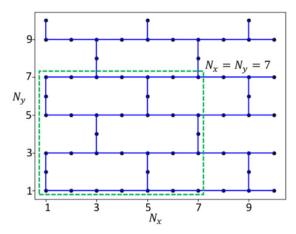

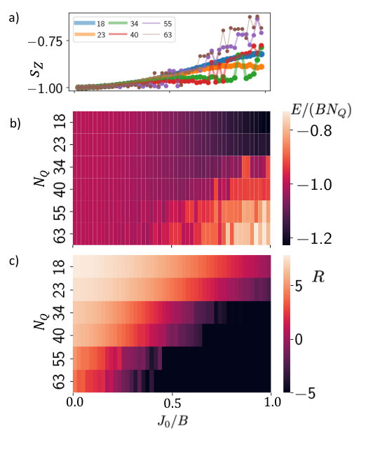
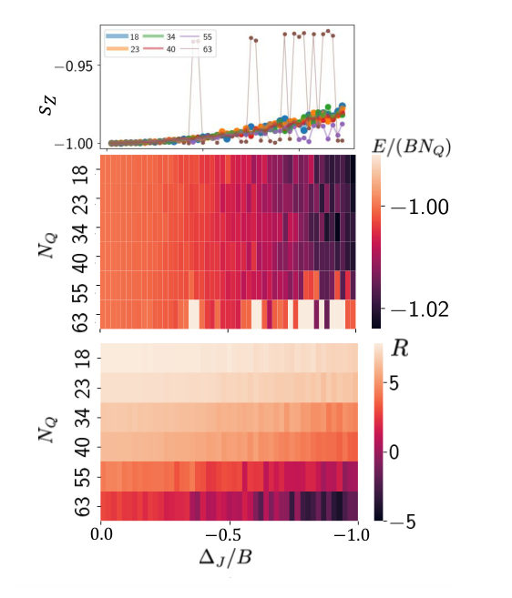

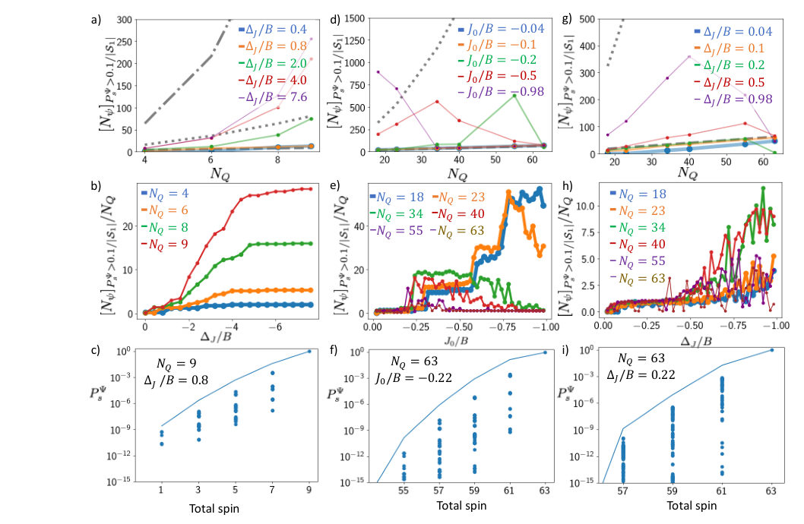
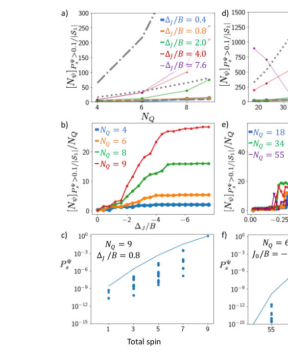
176 papers · 99 relevant · 6 highlighted
Every paper with at least one nonzero topic score, sorted by best-matching score. 🔥 marks scores ≥4/5. Click the title to jump to the full entry below; click [arXiv] to open the paper page. (secondary) marks papers from de-prioritized cond-mat archives.
Rydberg arrays 5/5 · 🔥 QC/QI experiment 4/5 · 🔥 analog quantum simulation 4/5 · 🔥 entanglement & information structure 4/5 · 🔥 non-equilibrium dynamics 4/5 · quantum measurements 3/5 · exotic spin models in light-matter 2/5 · measurement-induced transitions 2/5 · non-equilibrium universality 2/5 · scars & prethermalization 2/5scars & prethermalization 5/5 · 🔥 Rydberg arrays 4/5 · 🔥 non-equilibrium dynamics 4/5 · analog quantum simulation 3/5 · driven-dissipative phase transition 3/5 · entanglement & information structure 3/5 · exotic spin models in light-matter 3/5analog quantum simulation 4/5 · 🔥 driven-dissipative phase transition 4/5 · Tavis-Cummings & cavity-many-emitter 3/5 · correlated cavity matter 3/5 · exotic spin models in light-matter 3/5 · non-equilibrium dynamics 3/5 · non-equilibrium universality 3/5 · quantum optics experiment 3/5 · Keldysh / 2PI / non-Gaussian methods 2/5 · methods for driven-dissipative 2/5 · entanglement & information structure 1/5driven-dissipative phase transition 4/5 · 🔥 entanglement & information structure 4/5 · 🔥 measurement-induced transitions 4/5 · 🔥 non-equilibrium universality 4/5 · non-equilibrium dynamics 3/5 · methods for driven-dissipative 2/5 · quantum measurements 2/5(secondary) — 🔥 driven-dissipative phase transition 4/5 · 🔥 non-equilibrium dynamics 4/5 · 🔥 quantum optics experiment 4/5 · Keldysh / 2PI / non-Gaussian methods 3/5 · methods for driven-dissipative 3/5 · non-equilibrium universality 3/5quantum measurements 4/5 · correlated / nonlocal dissipation 3/5 · driven-dissipative phase transition 3/5 · entanglement & information structure 3/5 · methods for driven-dissipative 3/5 · measurement-induced transitions 2/5 · non-equilibrium dynamics 2/5driven-dissipative phase transition 4/5 · entanglement & information structure 3/5 · methods for driven-dissipative 3/5 · non-equilibrium dynamics 3/5 · Keldysh / 2PI / non-Gaussian methods 2/5 · correlated / nonlocal dissipation 2/5 · non-equilibrium universality 2/5QC/QI experiment 4/5 · 🔥 quantum optics experiment 4/5 · quantum measurements 3/5 · entanglement & information structure 2/5 · interference shaping light 2/5(secondary) — 🔥 QC/QI experiment 4/5 · 🔥 quantum optics experiment 4/5 · quantum measurements 3/5 · spintronics-quantum-optics interface 3/5driven-dissipative phase transition 4/5 · 🔥 non-equilibrium dynamics 4/5 · non-equilibrium universality 3/5 · quantum measurements 2/5non-equilibrium dynamics 4/5 · driven-dissipative phase transition 3/5 · entanglement & information structure 2/5 · non-equilibrium universality 2/5 · quantum measurements 2/5Rydberg arrays 4/5 · analog quantum simulation 3/5 · entanglement & information structure 3/5 · exotic spin models in light-matter 3/5QC/QI experiment 4/5 · 🔥 quantum optics experiment 4/5 · quantum measurements 3/5 · interference shaping light 2/5non-equilibrium dynamics 4/5 · driven-dissipative phase transition 3/5 · methods for driven-dissipative 3/5 · entanglement & information structure 2/5QC/QI experiment 4/5 · 🔥 quantum optics experiment 4/5 · quantum measurements 2/5 · spintronics-quantum-optics interface 2/5QC/QI experiment 4/5 · 🔥 spintronics-quantum-optics interface 4/5 · non-equilibrium dynamics 2/5 · quantum measurements 2/5QC/QI experiment 4/5 · 🔥 quantum optics experiment 4/5 · entanglement & information structure 2/5 · quantum measurements 2/5methods for driven-dissipative 4/5 · non-equilibrium dynamics 3/5 · driven-dissipative phase transition 2/5 · entanglement & information structure 2/5(secondary) — 🔥 spintronics-quantum-optics interface 4/5 · QC/QI experiment 3/5 · correlated / nonlocal dissipation 2/5 · quantum measurements 2/5QC/QI experiment 4/5 · non-equilibrium dynamics 2/5 · quantum measurements 2/5 · quantum optics experiment 2/5QC/QI experiment 4/5 · 🔥 quantum optics experiment 4/5 · interference shaping light 2/5QC/QI experiment 4/5 · spintronics-quantum-optics interface 3/5 · quantum optics experiment 2/5spintronics-quantum-optics interface 4/5 · interference shaping light 3/5 · methods for driven-dissipative 2/5spintronics-quantum-optics interface 4/5 · QC/QI experiment 3/5 · quantum measurements 2/5quantum measurements 4/5 · entanglement & information structure 2/5 · methods for driven-dissipative 2/5QC/QI experiment 4/5 · entanglement & information structure 2/5 · non-equilibrium dynamics 2/5entanglement & information structure 4/5 · 🔥 non-equilibrium dynamics 4/5QC/QI experiment 4/5 · 🔥 quantum optics experiment 4/5non-equilibrium dynamics 4/5 · analog quantum simulation 2/5 · exotic spin models in light-matter 2/5analog quantum simulation 4/5 · exotic spin models in light-matter 3/5QC/QI experiment 4/5 · quantum measurements 3/5quantum optics experiment 4/5 · QC/QI experiment 3/5QC/QI experiment 4/5 · quantum optics experiment 2/5quantum measurements 4/5 · entanglement & information structure 2/5methods for driven-dissipative 4/5 · non-equilibrium dynamics 2/5methods for driven-dissipative 4/5QC/QI experiment 4/5(secondary) — 🔥 spintronics-quantum-optics interface 4/5QC/QI experiment 4/5QC/QI experiment 4/5entanglement & information structure 3/5 · non-equilibrium dynamics 3/5 · Keldysh / 2PI / non-Gaussian methods 2/5 · correlated / nonlocal dissipation 2/5 · methods for driven-dissipative 2/5methods for driven-dissipative 3/5 · correlated / nonlocal dissipation 2/5 · driven-dissipative phase transition 2/5 · entanglement & information structure 2/5 · non-equilibrium dynamics 2/5methods for driven-dissipative 3/5 · Tavis-Cummings & cavity-many-emitter 2/5 · driven-dissipative phase transition 2/5 · non-equilibrium dynamics 2/5 · non-equilibrium universality 2/5methods for driven-dissipative 3/5 · non-equilibrium dynamics 3/5 · entanglement & information structure 2/5 · quantum measurements 2/5methods for driven-dissipative 3/5 · non-equilibrium dynamics 3/5 · correlated / nonlocal dissipation 2/5 · entanglement & information structure 2/5entanglement & information structure 3/5 · correlated / nonlocal dissipation 2/5 · non-equilibrium dynamics 2/5 · quantum measurements 2/5interference shaping light 3/5 · quantum optics experiment 3/5 · QC/QI experiment 2/5non-equilibrium dynamics 3/5 · non-equilibrium universality 3/5methods for driven-dissipative 3/5 · quantum measurements 3/5(secondary) — spintronics-quantum-optics interface 3/5 · QC/QI experiment 2/5QC/QI experiment 3/5 · methods for driven-dissipative 2/5(secondary) — non-equilibrium dynamics 3/5 · spintronics-quantum-optics interface 2/5quantum measurements 3/5 · Keldysh / 2PI / non-Gaussian methods 2/5entanglement & information structure 3/5 · Frenkel-Kontorova 2/5(secondary) — entanglement & information structure 3/5 · Keldysh / 2PI / non-Gaussian methods 2/5quantum measurements 3/5 · entanglement & information structure 2/5non-equilibrium dynamics 3/5 · non-equilibrium universality 2/5Rydberg arrays 3/5quantum measurements 3/5entanglement & information structure 3/5correlated / nonlocal dissipation 2/5 · quantum measurements 2/5 · spintronics-quantum-optics interface 2/5QC/QI experiment 2/5 · quantum optics experiment 2/5 · spintronics-quantum-optics interface 1/5analog quantum simulation 2/5 · interference shaping light 2/5analog quantum simulation 2/5 · non-equilibrium dynamics 2/5(secondary) — quantum optics experiment 2/5 · spintronics-quantum-optics interface 2/5(secondary) — driven-dissipative phase transition 2/5 · non-equilibrium dynamics 2/5(secondary) — Keldysh / 2PI / non-Gaussian methods 2/5 · non-equilibrium dynamics 2/5non-equilibrium dynamics 2/5 · non-equilibrium universality 2/5QC/QI experiment 2/5 · Rydberg arrays 1/5 · quantum measurements 1/5correlated / nonlocal dissipation 2/5 · entanglement & information structure 2/5QC/QI experiment 2/5 · quantum optics experiment 2/5non-equilibrium dynamics 2/5 · non-equilibrium universality 2/5analog quantum simulation 2/5 · methods for driven-dissipative 2/5quantum measurements 2/5methods for driven-dissipative 2/5QC/QI experiment 2/5entanglement & information structure 2/5(secondary) — non-equilibrium dynamics 2/5Keldysh / 2PI / non-Gaussian methods 2/5Keldysh / 2PI / non-Gaussian methods 2/5entanglement & information structure 2/5entanglement & information structure 2/5entanglement & information structure 2/5(secondary) — non-equilibrium dynamics 2/5methods for driven-dissipative 2/5QC/QI experiment 2/5entanglement & information structure 2/5spintronics-quantum-optics interface 2/5Keldysh / 2PI / non-Gaussian methods 2/5methods for driven-dissipative 2/5Keldysh / 2PI / non-Gaussian methods 2/5methods for driven-dissipative 2/5entanglement & information structure 2/5entanglement & information structure 2/5spintronics-quantum-optics interface 2/5(secondary) — non-equilibrium dynamics 2/5analog quantum simulation 2/5Kondo & dissipative impurity 1/5quantum measurements 1/5Papers by authors on your watch list. Click the title to jump to the full entry below; click [arXiv] to open the paper page.
Papers from quant-ph and your primary cond-mat archives (quant-gas, stat-mech, str-el, dis-nn). Highlighted papers (⭐) come first, then everything else sorted by topic-relevance score, highest first.
← Index · ← Previous · Next →
Authors: Thibaut Pollet, Victor Guilloux, Duc-Duy Tran, Anton Pishchagin, Stephen Wein, Joseph A. Sulpizio, William Hease, Petr Stepanov, Petr Steindl, Nico Margaria, Samuel Mister, Martina Morassi, Aristide Lemaître, Thi Huong Au, Sébastien Boissier, Pascale Senellart
Type: experiment · Category: quantum information and computing · PDF: https://arxiv.org/pdf/2604.25615v1
Analysis basis: full PDF text, analyzed in chunks
Topic relevance: 🔥 QC/QI experiment 4/5 · 🔥 quantum optics experiment 4/5 · interference shaping light 2/5
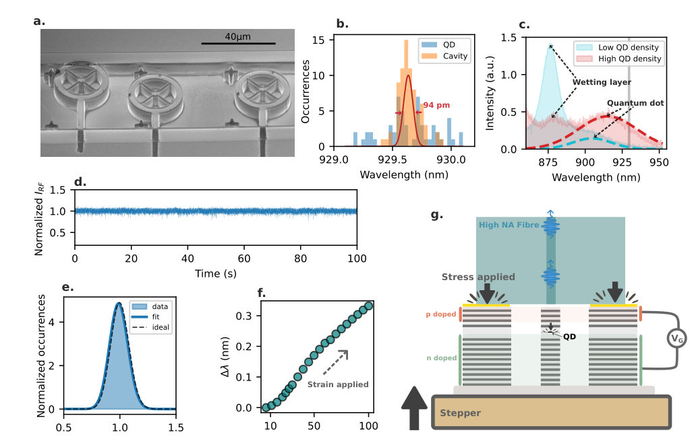
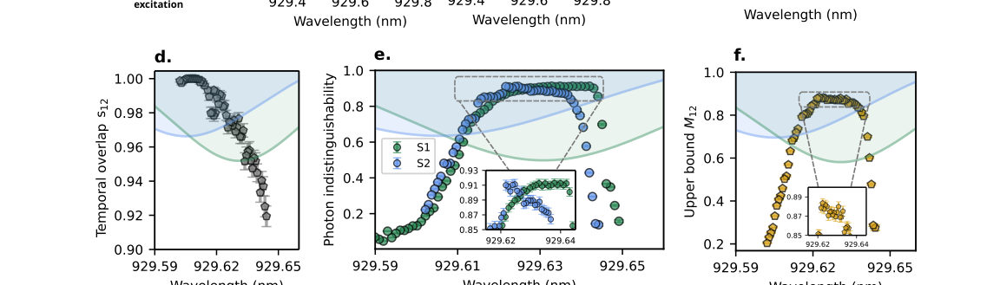
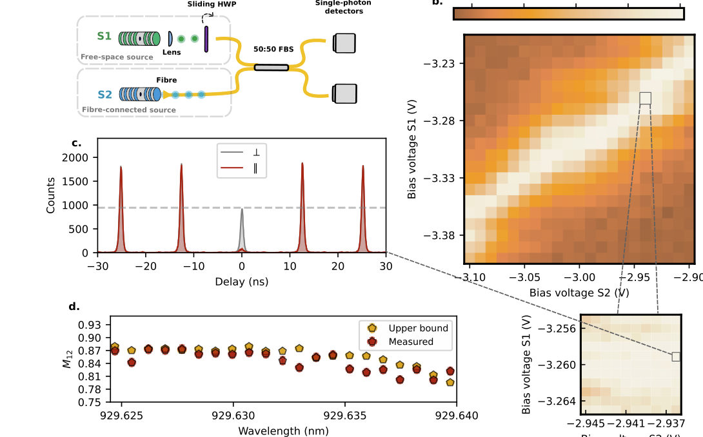
Main problem. Achieving high-visibility quantum interference (indistinguishability) between single photons emitted from spatially distant and independent semiconductor quantum dot-cavity sources.
Main result. Demonstrated a record mutual indistinguishability of 88 +/- 1% between two distant sources, reaching the upper bound set by the intrinsic performance of the individual emitters.
Method. The researchers used a combination of strain-tuning (via piezo-driven fiber) and electrical tuning (via PIN diode Stark shift) to align wavelengths, followed by Hong-Ou-Mandel interference measurements.
Summary. This paper reports on the successful creation of near-identical photons from two separate, distant quantum dot-cavity devices. By using a dual-tuning approach involving both strain and electric fields, the researchers were able to overcome wavelength mismatches and spectral noise. They achieved a high mutual indistinguishability of 88%, which is nearly the maximum possible value allowed by the individual sources. This achievement is a significant milestone for scaling up photonic quantum technologies and building large-scale quantum networks.
Model / system. The platform consists of two independent InGaAs quantum dot-cavity micropillars embedded in a PIN diode structure, cooled to 5 K, using longitudinal acoustic (LA) phonon-assisted excitation.
Key observables. Two-photon indistinguishability (M12), Hong-Ou-Mandel visibility (V_HOM), second-order correlation function (g2(0)), and spectral noise/fluctuations.
Important parameters / regimes. Indistinguishability of 88%, cavity Q factor of 8000, charge noise at 4.8% of natural linewidth, and photon collection efficiency between 15.6% and 27.5%.
Assumptions / limitations. The calculation of the theoretical upper bound assumes perfect temporal overlap (s12 = 1) between the two photons.
Figures summary. Fig 1: SEM images and fabrication details showing wavelength/cavity distribution and low charge noise. Fig 2: Principles of phonon-assisted excitation and lifetime/Purcell effect measurements. Fig 3: Extraction of mutual indistinguishability and comparison to theoretical bounds. Extended Data: Fabrication process, g2(0) measurements, and optical setup schematics.
Paper structure. The paper introduces the challenge of remote interference, describes the fabrication and tuning architecture, presents the characterization of individual source stability, demonstrates the successful interference of distant sources, and concludes with the scalability and future potential of the approach.
Why it may be interesting. This work is highly relevant to quantum optics and quantum networks as it demonstrates a scalable method to bridge the gap between single-source performance and remote-source interference, a prerequisite for photon-mediated entanglement in quantum computing.
Scalable optical quantum technologies require interference between large numbers of indistinguishable single-photons emitted by independent sources. Semiconductor quantum dots are known to be excellent on-demand sources of single-photons. They show record efficiency when inserted into optical cavities to control their spontaneous emission and generate trains of near identical photons over microsecond timescales. However, generating perfectly identical photons from distant cavity-based sources has remained a long-standing challenge. It requires precise matching of the emission wavelengths and emission dynamics, while simultaneously minimizing spectral noise across all time scales for distant emitters in uncorrelated environments. Here, we report on the nanofabrication of a large number of quantum dot-cavity sources with ultra-low spectral noise and wavelength dispersion. The high source efficiency and the use of two tuning mechanisms enable precise optimization of the spectral overlap between distant sources. With this approach, we demonstrate a two-photon indistinguishability of $88\pm1$ % between photons emitted from two distant sources. Remarkably, this value reaches the upper bound set by the intrinsic indistinguishability of photons emitted successively by each source. These results represent a key milestone for scaling photon-based quantum technologies.
Authors: Yifan Song, Sina Ilkhani, Leah Webb, Helen Highland, Shunki Nakamura, Stephen B. Cronin, Susumu Takahashi
Type: experiment · Category: quantum information and computing · PDF: https://arxiv.org/pdf/2604.25097v1
Analysis basis: full PDF text, analyzed in chunks
Topic relevance: 🔥 QC/QI experiment 4/5 · spintronics-quantum-optics interface 3/5 · quantum optics experiment 2/5
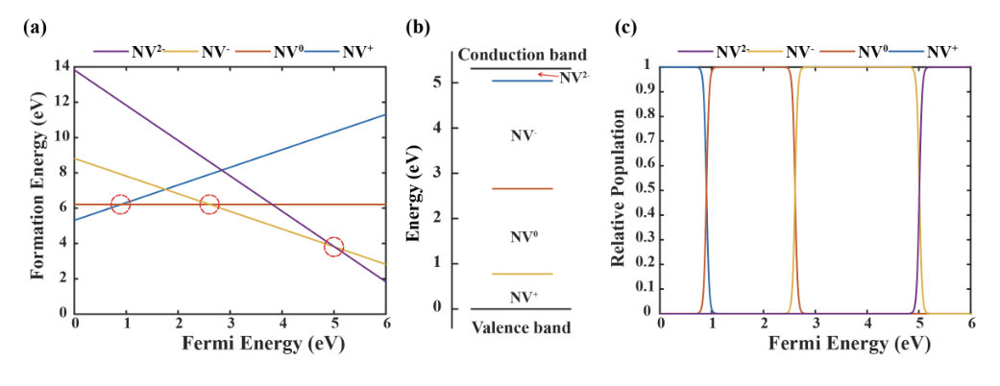
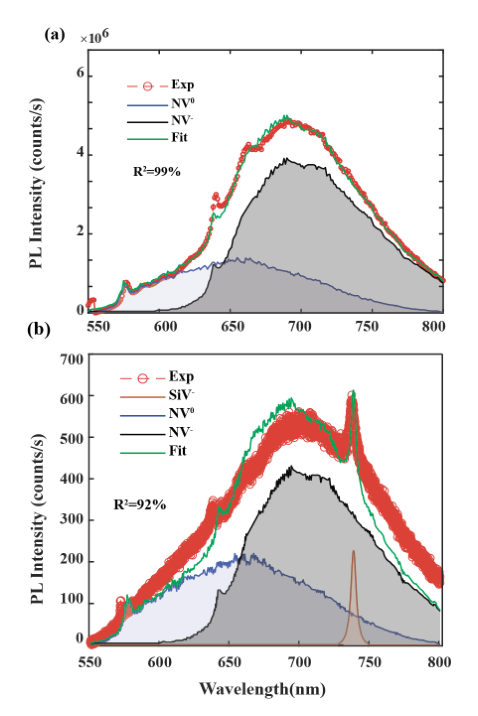
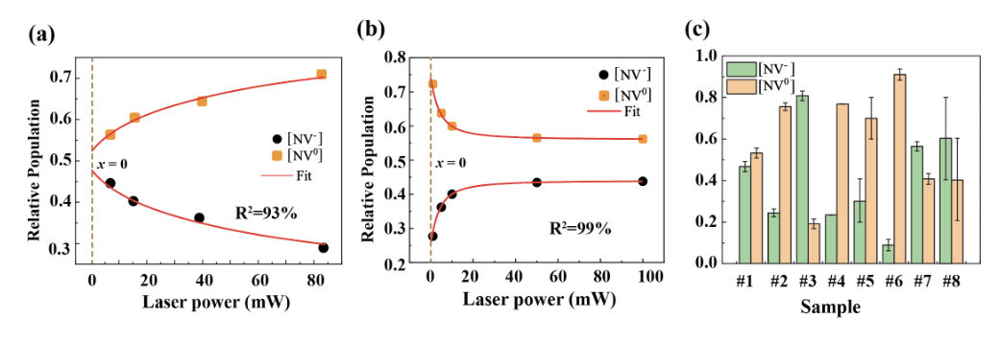
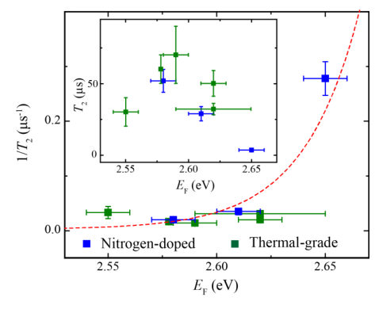
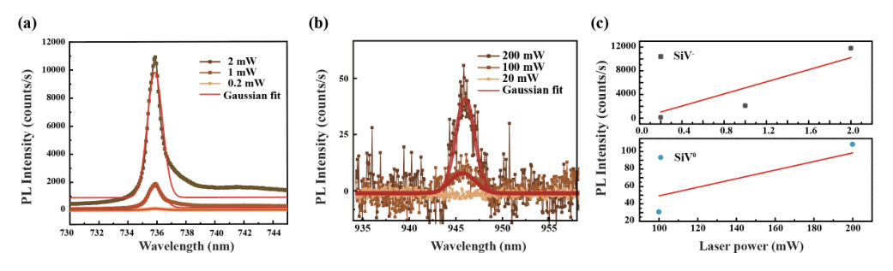
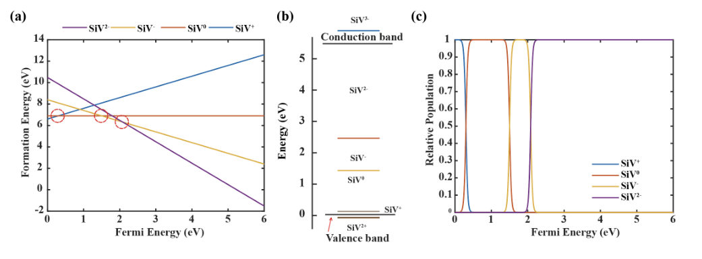
Main problem. The difficulty of experimentally determining the Fermi energy in diamond due to the highly non-linear relationship between Fermi energy and donor-acceptor concentrations.
Main result. The development of a non-destructive method to determine the Fermi energy by analyzing the relative populations of NV and SiV charge states via photoluminescence spectroscopy.
Method. The method combines photoluminescence (PL) spectral decomposition with Density Functional Theory (DFT) models to relate charge state populations to the Fermi energy.
Summary. This paper presents a new experimental method to precisely determine the Fermi energy in diamond using photoluminescence spectroscopy. By measuring the ratio of different charge states of NV and SiV centers and applying DFT-based models, the researchers can map the Fermi energy across different diamond types. The study also demonstrates how this energy level affects spin coherence times and charge state stability. This technique is highly advantageous because it offers high spatial and temporal resolution and can function in extreme environments.
Model / system. The physical system consists of various diamond crystals (CVD, HPHT, and polycrystalline) containing nitrogen-vacancy (NV) and silicon-vacancy (SiV) defect centers.
Key observables. Relative populations of NV- and NV0 centers, spin coherence time (T2), and PL intensity.
Important parameters / regimes. Fermi energy (Ef), nitrogen donor concentration (P1 centers), and laser power dependence.
Assumptions / limitations. The method relies on the accuracy of DFT-derived formation energies and assumes the ability to extrapolate populations to zero laser power to avoid laser-induced charge state conversion.
Figures summary. Figure 1 shows energy diagrams and DFT-calculated formation energies; Figure 2 displays PL spectra and the results of spectral decomposition analysis; Figure 3 shows the dependence of parameters on specific variables.
Paper structure. The paper introduces the problem of Fermi energy determination, presents the proposed PL-based method using DFT integration, demonstrates the method on various nitrogen-doped and thermal-grade diamond samples, investigates the correlation between Fermi energy and spin coherence (T2), extends the method to SiV centers, and concludes with the method's advantages and potential applications.
Why it may be interesting. This is relevant for quantum information because controlling the charge state stability and spin coherence of NV centers is critical for the development of robust solid-state qubits and quantum sensors.
Electronic band structures and the Fermi energy provide essential information for understanding the electronic properties of solids. In semiconductors, the Fermi energy level is determined by the donor and acceptor concentrations. For diamond, the relationship between the Fermi energy level and the donor-acceptor concentrations is highly nonlinear; therefore, experimental determination of the Fermi energy level is important. Here, we report a method to determine the Fermi energy of diamond based on photoluminescence (PL) measurement. The density-functional-theory (DFT) study by Deák et al.~\cite{deak2014formation} showed the relationship between the Fermi energy and the formation energies of nitrogen-vacancy centers in the negatively charged (NV-) and neutrally charged (NV0) charge states. In the present method, we measure the relative populations of the NV- and NV0 centers from PL spectral analysis and, using these populations and the DFT result, determine the Fermi energy of the diamond samples. Moreover, we show the application of the method to study the spin coherence and the stability against the charge state conversion of the NV centers on several diamond samples. We also extend the method for the Fermi energy determination using the silicon-vacancy (SiV) center in diamond. The PL-based method is advantageous for determining the Fermi energy with high spatial and fast time resolutions, even in extreme environments, and can be extended to determine various wide band gap semiconductors.
Authors: Han-Qiu Zhang, Shuang-Shuo Chu, Jian-Song Zhang, Wen-Xue Zhong, Guang-Ling Cheng
Type: theory · Category: quantum information and computing · PDF: https://arxiv.org/pdf/2604.25141v1
Analysis basis: full PDF text, analyzed in chunks
Topic relevance: 🔥 spintronics-quantum-optics interface 4/5 · interference shaping light 3/5 · methods for driven-dissipative 2/5
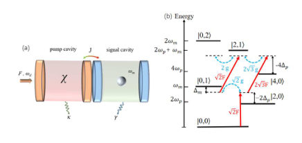
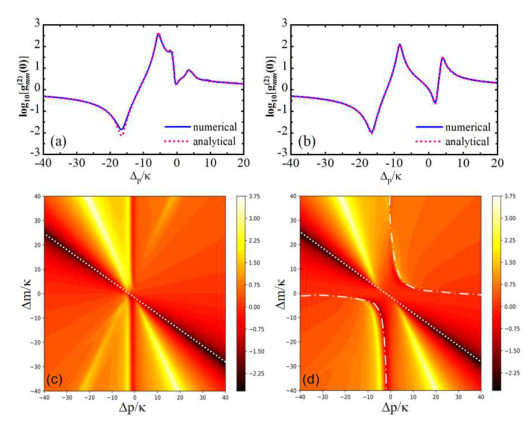
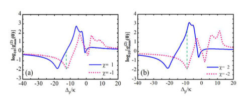
Main problem. Achieving nonreciprocal unconventional magnon blockade (NUMB) in a hybrid cavity-magnon system to prepare single-magnon resources.
Main result. The study demonstrates that nonreciprocity can be achieved by adjusting the sign of the Kerr nonlinearity, providing a method to induce magnon blockade through either destructive interference or anharmonic energy splitting.
Method. The authors use adiabatic elimination of the signal cavity mode, a rotating reference frame, and the probability amplitude method to find analytical solutions, validated by numerical simulations of the master equation.
Summary. This paper proposes a scheme to achieve nonreciprocal magnon blockade in a hybrid system of two microwave cavities and a YIG sphere. By utilizing nonlinear effects like Kerr nonlinearity and parametric driving, the researchers show how to control the magnon blockade effect. The study identifies two distinct regimes: unconventional blockade via destructive interference and conventional blockade via energy splitting. This work offers a new method for generating single-magnon resources essential for quantum information tasks.
Model / system. A hybrid system consisting of two microwave cavities (pump and signal) and one Yttrium Iron Garnet (YIG) sphere, featuring nonlinear photon-photon coupling, magnetic dipole interaction, and Kerr nonlinearity.
Key observables. The second-order correlation function g(2) of the magnon mode, used to identify magnon bunching, antibunching, and perfect blockade.
Important parameters / regimes. Kerr nonlinearity (chi), coupling strengths (g, J, g_ms), detunings (Delta_p, Delta_m, Delta_s), and decay rates (kappa, gamma).
Assumptions / limitations. The signal cavity mode is eliminated using second-order perturbation theory under the condition that its detuning is much larger than the coupling strengths.
Figures summary. Figure 2 plots the log of the second-order correlation function against detuning, showing the transition between weak and strong coupling regimes and identifying specific blockade frequency conditions.
Paper structure. The paper introduces the physical platform, derives an effective Hamiltonian via adiabatic elimination, presents analytical solutions for the blockade conditions, and uses numerical simulations to demonstrate nonreciprocity and the transition between different blockade regimes.
Why it may be interesting. It provides a novel mechanism for controlling quantum interference and nonreciprocity in hybrid systems, which is highly relevant for developing single-photon/magnon sources and quantum information processing.
We present an alternative scheme to achieve nonreciprocal unconventional magnon blockade (NUMB) in a hybrid system formed by two microwave cavities and one yttrium iron garnet (YIG) sphere, where the pump and signal cavities interact nonlinearly with each other and the signal cavity is coupled to the YIG sphere. It is found that the nonlinear coupling occurs between the pump cavity and magnon modes due to the dispersive interactions among three bosonic modes. Meanwhile, the Kerr nonlinearity is present in the pump cavity. Based on these nonlinear effects, a nonreciprocal magnon blockade could be achieved with the help of weak parametric driving of the pump cavity. The present work provides an alternative method to prepare single magnon resource, which may be helpful for quantum information processing.
Authors: Dileep Singh, Riley W. Hooper, Christoph Findler, Utsab Banerjee, Dominik B. Bucher
Type: experiment · Category: other · PDF: https://arxiv.org/pdf/2604.25752v1
Analysis basis: full PDF text, analyzed in chunks
Topic relevance: 🔥 spintronics-quantum-optics interface 4/5 · QC/QI experiment 3/5 · quantum measurements 2/5
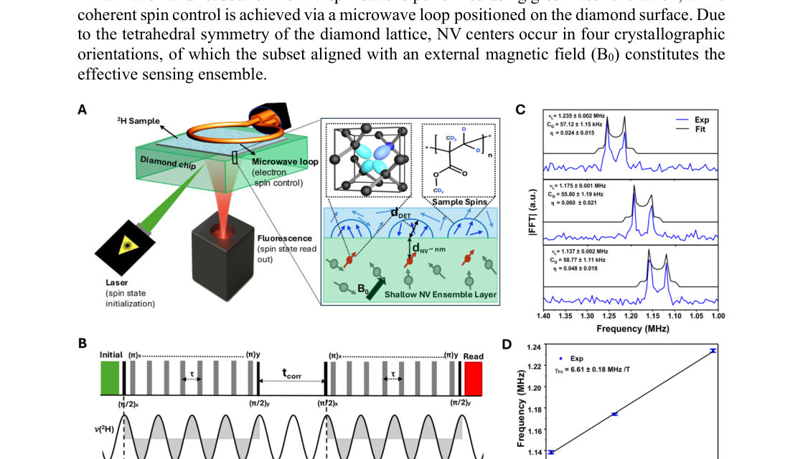
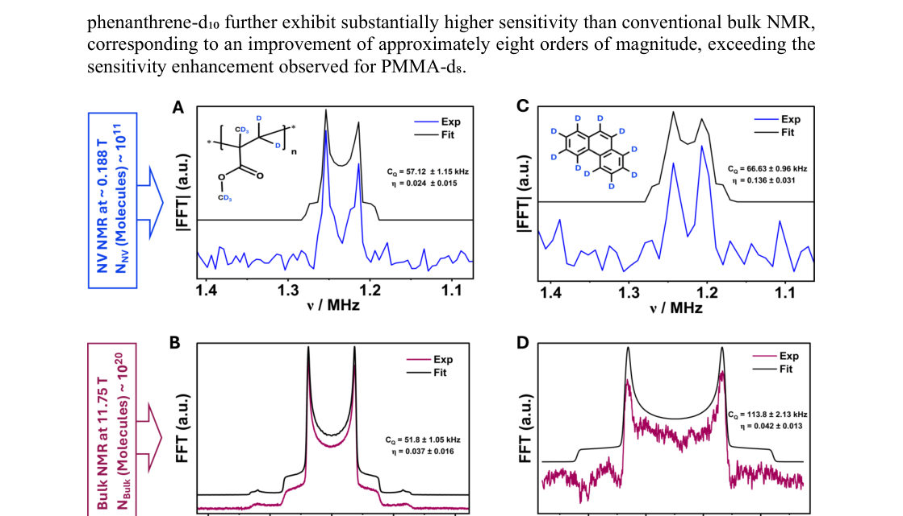
Main problem. Traditional NMR spectroscopy is limited by weak signal strength and requires large sample volumes and high magnetic fields, making nanoscale detection difficult.
Main result. The researchers demonstrated nanoscale deuterium (2H) NMR spectroscopy using NV centers in diamond, achieving a sensitivity enhancement of six to eight orders of magnitude over inductive detection at low magnetic fields.
Method. The study uses NV-based correlation spectroscopy with XY8-N dynamical decoupling pulse blocks to detect statistical spin fluctuations (spin noise) from nanometer-scale volumes.
Summary. This paper presents a method for performing deuterium NMR spectroscopy at the nanoscale using nitrogen-vacancy centers in diamond. By detecting spin noise rather than inductive signals, the researchers achieved a massive sensitivity boost compared to conventional NMR. The technique successfully reproduces complex quadrupolar powder patterns at much lower magnetic fields than standard equipment. This approach enables the study of molecular dynamics and phase transitions in extremely small volumes, potentially reaching the single-molecule limit.
Model / system. The experimental platform consists of an ensemble of nitrogen-vacancy (NV) centers in diamond implanted ~8 nm below the surface, used to sense deuterated polymers (PMMA-d8) and molecular solids (phenanthrene-d10) at low magnetic fields (~180 mT).
Key observables. 2H Larmor frequency, quadrupolar coupling constant (CQ), asymmetry parameter (eta), and gyromagnetic ratio (gamma).
Important parameters / regimes. Low magnetic field regime (~180 mT), nanoscale detection volumes, and sensitivity enhancement of 6-8 orders of magnitude.
Figures summary. Figure 1A shows the experimental geometry; 1B shows the pulse sequence; 1C shows experimental 2H spectra; 1D shows the linear Zeeman dependence of resonance frequency vs. magnetic field.
Paper structure. The paper introduces the limitations of bulk NMR, describes the NV-based experimental setup and pulse sequence, presents the results for deuterium NMR in polymers and solids, validates the findings via temperature-dependent studies and bulk NMR comparison, and concludes with the potential for single-molecule spectroscopy.
Nuclear magnetic resonance (NMR) spectroscopy provides unparalleled access to molecular structure and dynamics but is traditionally limited by weak signal strength, requiring large sample volumes and high magnetic fields. Here, we demonstrate nanoscale deuterium (2H) NMR spectroscopy using nitrogen vacancy (NV) centers in diamond, reproducing the characteristic quadrupolar powder line shapes that are present in the conventional bulk NMR spectra. By detecting statistical spin fluctuations from nanometer scale detection volumes, our approach delivers a sensitivity enhancement of six to eight orders of magnitude over inductive detection while operating at magnetic fields two orders of magnitude lower than those used in conventional NMR. Temperature dependent measurements of a deuterated polymer and molecular solid reveal distinct motional averaging and phase transitions with nanoscale sensitivity. Powder-like NV detected 2H NMR establishes a powerful tool for probing molecular dynamics on the nanoscale and, in the ultimate limit, at the single molecule level - capabilities beyond those of most existing spectroscopic techniques.
Authors: Arvin Keshvari, William Tuxbury, Zin Lin
Type: theory · Category: numerical methods · PDF: https://arxiv.org/pdf/2604.25193v1
Analysis basis: full PDF text, analyzed in chunks
Topic relevance: 🔥 quantum measurements 4/5 · entanglement & information structure 2/5 · methods for driven-dissipative 2/5
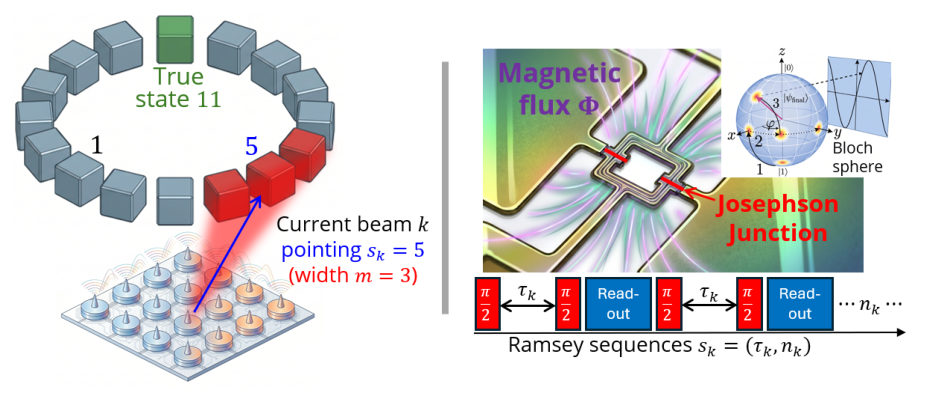
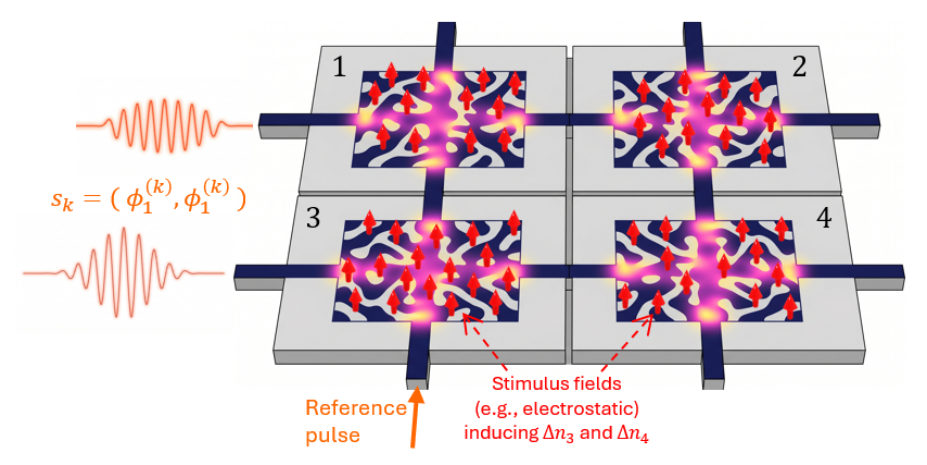
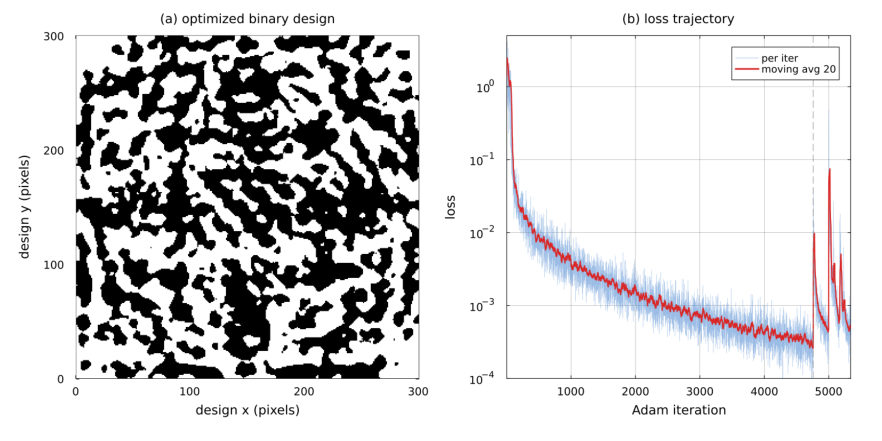
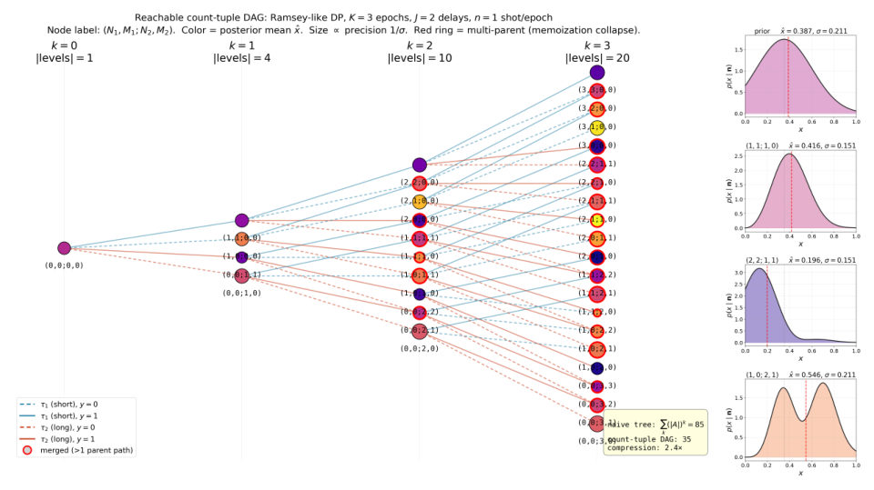
Main problem. The lack of end-to-end co-design between physical hardware geometry and adaptive measurement policies, which leads to information loss at the analog-to-digital boundary.
Main result. The development of a 'joint-DP' framework that achieves massive performance gains in sensing, including a 123x reduction in MSE for photonic metasensors and an 11.3x reduction for superconducting qubit flux sensors.
Method. A joint dynamic programming (joint-DP) approach using differentiable dynamic programming and the envelope theorem to compute exact, unbiased gradients of the hardware geometry without smoothing the Bellman maximum.
Summary. This paper introduces a new optimization framework called 'joint-DP' for the simultaneous end-to-end design of physical hardware and adaptive measurement policies. By using the envelope theorem to differentiate through the Bellman equation, the authors avoid the biases introduced by traditional smoothing methods. The framework demonstrates significant improvements in sensing precision across radar, superconducting qubits, and photonic metasurfaces. This approach ensures that the hardware is specifically optimized to exploit the information gained during adaptive measurement steps.
Model / system. A general framework for sensing modeled as Partially Observable Markov Decision Processes (POMDPs), applied to three specific systems: a radar beam-search, a superconducting-qubit flux sensor (Ramsey spectroscopy), and a high-dimensional photonic metasensor.
Key observables. Mean-Squared Error (MSE), Mutual Information (MI), Expected Fisher log-determinant, and Expected Value of Perfect Information (EVPI).
Important parameters / regimes. Hardware geometry (c), adaptive measurement policy (pi), belief state (b), and the number of sensing epochs (K).
Assumptions / limitations. The hardware is designed once and remains fixed for the lifetime of the device; the inner policy is Bellman-optimal; and the computational cost of the Bellman recursion must fit within memory.
Paper structure. The paper introduces the problem of fragmented optimization, proposes the joint-DP framework, details the mathematical derivation of the 'sharp-max' gradient via the envelope theorem, presents a hierarchy of relaxation methods for scalability, and validates the method through three diverse case studies (radar, SQUID, and photonics).
Why it may be interesting. This is highly relevant for quantum optics and open quantum systems because it provides a principled way to optimize the design of quantum sensors and measurement protocols (like Ramsey spectroscopy) by simultaneously optimizing the physical device and the adaptive control sequence.
Inverse design has made vast physical parameter spaces a substrate for emergent behavior. In sensing, the stakes of this principle are sharpest at the analog-to-digital boundary, where any information the hardware fails to capture is information no downstream algorithm can recover; hardware optimization alone is therefore not enough, and the geometry must be co-designed with a rule for what to measure next. We formulate this co-design as \emph{joint dynamic programming} (joint-DP): a single optimization over the continuous hardware geometry and a Bellman-optimal adaptive measurement policy. The outer hardware gradient is computed by differentiable dynamic programming with a sharp Bellman maximum, which the envelope theorem makes exact and bias-free, and a relaxation hierarchy carries the common framework from small discrete POMDPs to $10^5$-pixel photonic topologies. Across three case studies, joint-DP beats the natural baseline of its community by a large factor: on a radar beam-search POMDP, classical information-bound-guided geometry selection loses $2.8\times$ in attainable adaptive value; on a superconducting-qubit flux sensor, joint-DP reduces deployed mean-squared error by $11.3\times$ over the joint Bayesian Cramér--Rao baseline, with both geometries numerically co-optimized under their respective objectives; and on a $90{,}000$-pixel photonic metasensor, joint-DP via the Bayesian Fisher-information-matrix surrogate reduces deployed mean-squared error by $123\times$ relative to a randomized baseline. For any sensor whose hardware is designed once but whose policy runs for the device's lifetime, joint optimization of hardware and policy is the minimum principled procedure.
Authors: John P. T. Stenger, C. Stephen Hellberg, Daniel Gunlycke
Type: both · Category: quantum information and computing · PDF: https://arxiv.org/pdf/2604.25715v1
Analysis basis: full PDF text, analyzed in chunks
Topic relevance: 🔥 QC/QI experiment 4/5 · entanglement & information structure 2/5 · non-equilibrium dynamics 2/5





Main problem. Estimating ground-state energies of Ising models using short-time evolution on near-term quantum hardware while managing the impact of hardware errors and decoherence.
Main result. The CVQE algorithm effectively finds ground-state energies for up to 63 qubits, demonstrating that the number of significant basis states scales subexponentially, though errors increase with qubit number and coupling strength.
Method. The Cascaded Variational Quantum Eigensolver (CVQE) uses a Guided-Sampling Ansatz (GSA) where short-time adiabatic state preparation generates a subspace for classical eigenvalue solving.
Summary. This paper presents a method to calculate the ground-state energies of Ising models using a quantum computer to simulate short-time evolution. By using the CVQE algorithm on up to 63 qubits, the authors demonstrate that the required computational subspace grows slowly with system size. They identify how hardware errors scale with coupling strength and qubit count, and propose an information ratio as a diagnostic for calculation accuracy. The work highlights the potential for near-term quantum devices to perform useful simulations of spin systems.
Model / system. Transverse-field Ising models (both homogeneous and random-coupling/spin-glass) on a heavy-hex lattice, implemented on the IBM ibm_torino quantum processor.
Key observables. Ground-state energy (E0), average spin (sZ), information ratio (R), and number of significant basis states (N_psi).
Important parameters / regimes. Coupling strength (J0 or delta J), transverse field (B), number of qubits (NQ), and the ratio of coupling to field strength.
Assumptions / limitations. The method assumes that short-time diabatic evolution can capture the ground state within a manageable subspace and that the heavy-hex architecture can be used to reach the quantum utility regime.
Figures summary. Figure 1 shows lattice connectivity; Figure 2 plots average spin, energy, and information ratio for homogeneous models; Figure 3 shows similar metrics for random-coupling models; Figure 4 compares basis state probability distributions between exact and CVQE results.
Paper structure. The paper introduces the CVQE algorithm and GSA, applies it to homogeneous and random Ising models on IBM hardware, performs error and entropic analysis, provides a mathematical framework for diabatic evolution, and concludes with scaling and utility assessments.
Why it may be interesting. It provides a practical framework for using short-coherence-time devices to study many-body dynamics and ground states, specifically showing how to use diabatic processes to bypass the need for full adiabaticity.
We find the ground-state energy of the Ising model using the Cascaded Variational Quantum Eigensolver (CVQE) algorithm with the Guided-Sampling Ansatz (GSA) using up to 63 qubits on a quantum computer. We study a heavy-hex lattice to match the qubit architecture, allowing us to perform calculations in the quantum utility regime. We study both a homogeneous and random-coupling model. We locate the boundary of acceptable quantum errors as a function of the number of qubits and coupling strength. An entropic analysis is performed giving insights into the quantum computing performance. A subspace analysis is performed that suggests that the Ising model is especially suited for near-term quantum computing.
Authors: Dimitrios Maroulakos, Andrzej Wal, Marcin Kowalik, Czesław Jasiukiewicz, Rohit Kumar Shukla, Sunil K. Mishra, Levan Chotorlishvili
Type: theory · Category: disordered systems and neural networks · PDF: https://arxiv.org/pdf/2604.25663v1
Analysis basis: full PDF text, analyzed in chunks
Topic relevance: 🔥 entanglement & information structure 4/5 · 🔥 non-equilibrium dynamics 4/5
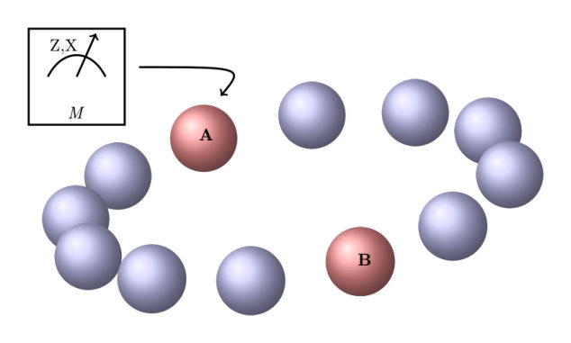
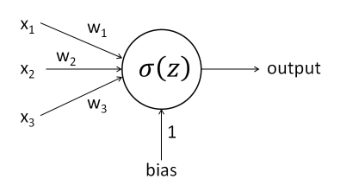
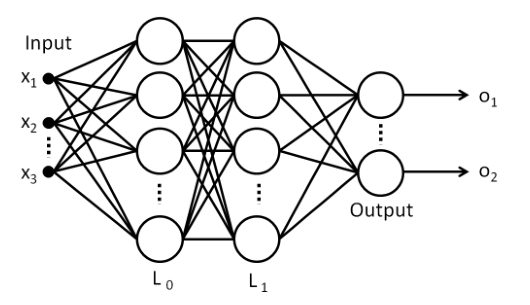
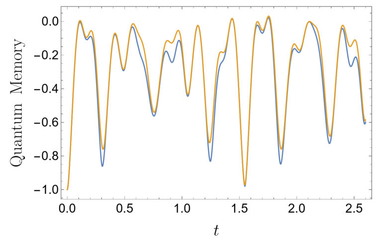
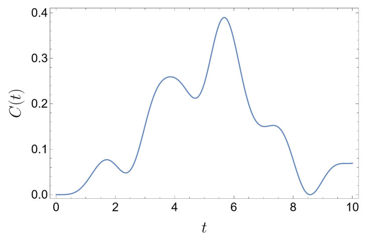
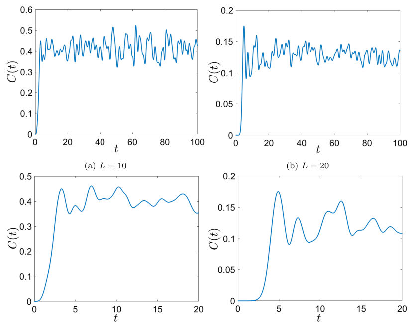
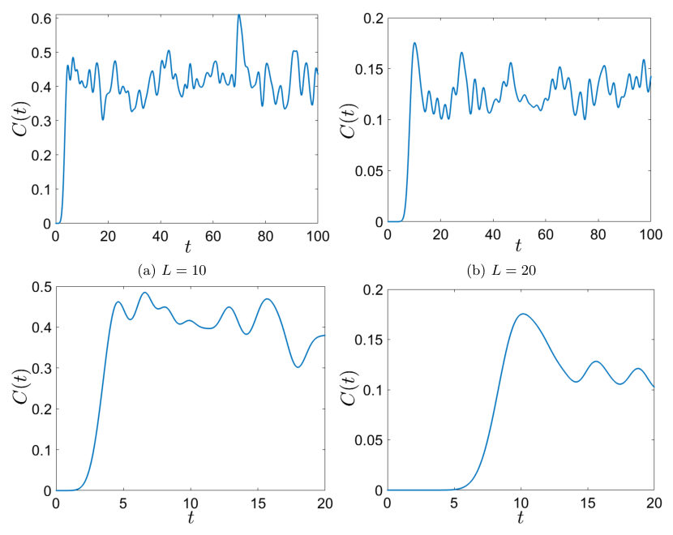
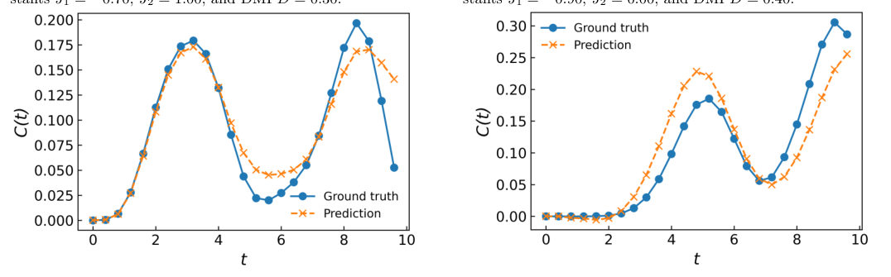
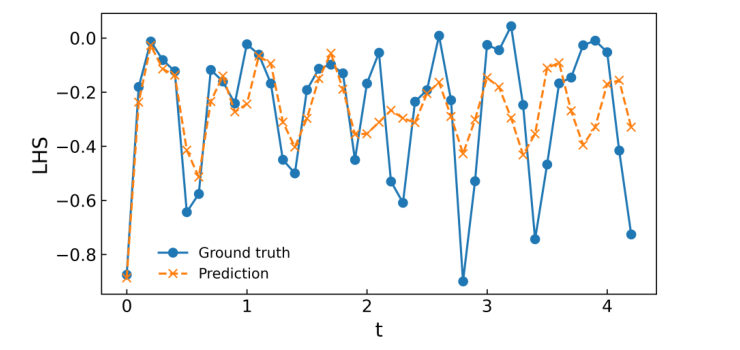
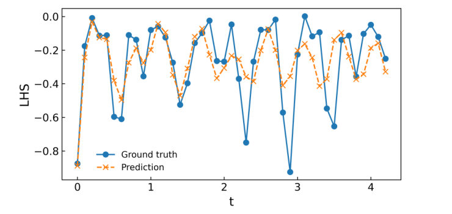
Main problem. The study investigates the time-dependent dynamics of quantum memory and information scrambling (OTOC) in chiral spin chains, specifically looking at how broken inversion symmetry affects these processes.
Main result. Quantum memory is found to be more sensitive to broken inversion symmetry and the Dzyaloshinskii-Moriya interaction than OTOC, exhibiting faster oscillations and a lack of equilibration. Additionally, a classical neural network can predict these dynamics, though its accuracy decreases with stronger DMI.
Method. The authors use exact diagonalization and analytical derivations for single and two-excitation sectors, combined with a classical deep learning artificial neural network (ANN) trained via backpropagation to predict time-series results.
Summary. This paper explores how quantum information scrambles and how quantum memory evolves in a chiral spin chain. By comparing the Out-of-Time-Ordered Correlator (OTOC) with a modified quantum memory formalism, the authors show that quantum memory is a more sensitive probe of broken inversion symmetry. They also demonstrate that a classical artificial neural network can be trained to predict these complex quantum dynamics, although the prediction error increases as the Dzyaloshinskii-Moriya interaction becomes stronger.
Model / system. A 1D chiral spin-1/2 chain (modeled after multiferroic materials or atoms on Ir(001) surfaces) featuring nearest-neighbor ferromagnetic (J1) and next-nearest-neighbor antiferromagnetic (J2) interactions, along with a Dzyaloshinskii-Moriya (DM) interaction term.
Key observables. Out-of-Time-Ordered Correlator (OTOC), Quantum Memory (via Entropic Uncertainty Relations), von Neumann entropy, and multipartite entanglement (CKW monogamy inequality).
Important parameters / regimes. Dzyaloshinskii-Moriya interaction strength (D), exchange constants (J1, J2), and the number of excitations.
Assumptions / limitations. The analysis is restricted to specific excitation sectors (single and two-excitation) and periodic boundary conditions; the neural network is a classical architecture, not a quantum one.
Figures summary. Figure 1 shows the experimental setup of an atomic chain; Figure 2 and 3 illustrate the neural network architecture; Figure 4 plots the time-dependent reduction in measurement uncertainty; Figure 5 shows OTOC dynamics.
Paper structure. The paper introduces the problem of time-dependent quantum memory, defines the chiral spin chain Hamiltonian, presents the analytical and numerical methods for calculating OTOC and entropy, describes the ANN training protocol, and concludes with a comparison of the sensitivity of different observables and the predictive performance of the network.
Why it may be interesting. This paper is relevant for many-body dynamics and open quantum systems because it explores how broken symmetries and chiral interactions influence the propagation of information and the stability of quantum correlations, providing a bridge between classical machine learning and quantum information diagnostics.
Entropic uncertainty relations are universal quantifiers of fundamental uncertainties of quantum measurements and are widely discussed in the quantum metrology literature. Quantum memory is a phenomenon related to the specific type of quantum correlations that allows for reducing fundamental uncertainties of quantum measurements. In the present work, the modified concept of quantum memory for time-dependent problems is proposed. We compare the time-dependent formulation of quantum memory with the out-of-time-ordered correlator (OTOC). Quantum memory is a rigorous mathematical concept that requires demanding calculations. Thus, until now, quantum memory has been discussed mainly for simple model systems and stationary problems. In the present work, we demonstrate that quantum memory can also be studied for realistic and physically relevant systems, e.g., the atomic helical spin chain, as well as the emergence and propagation of quantum correlations in time. We found that quantum memory manifests faster oscillations in time than OTOC and does not equilibrate. Furthermore, an artificial neural network is trained and asked to predict results for OTOC and quantum memory. These results show that quantum memory is more sensitive than OTOC in terms of broken inversion symmetry and the nonreciprocal effect.
Authors: Michael Dobinson, Felix Hufnagel, Simon A. Meynell, Camille Bowness, Melanie Gascoine, Walter Wasserman, Prasoon K. Shandilya, Christian Dangel, Michael L. W. Thewalt, Stephanie Simmons, Daniel B. Higginbottom
Type: experiment · Category: quantum information and computing · PDF: https://arxiv.org/pdf/2604.25170v1
Analysis basis: full PDF text, analyzed in chunks
Topic relevance: 🔥 QC/QI experiment 4/5 · 🔥 quantum optics experiment 4/5
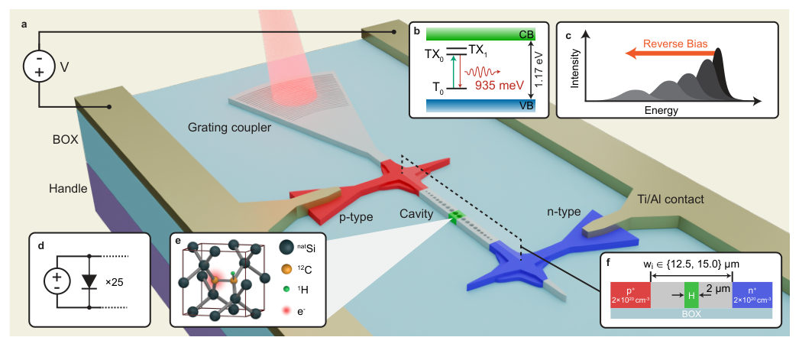
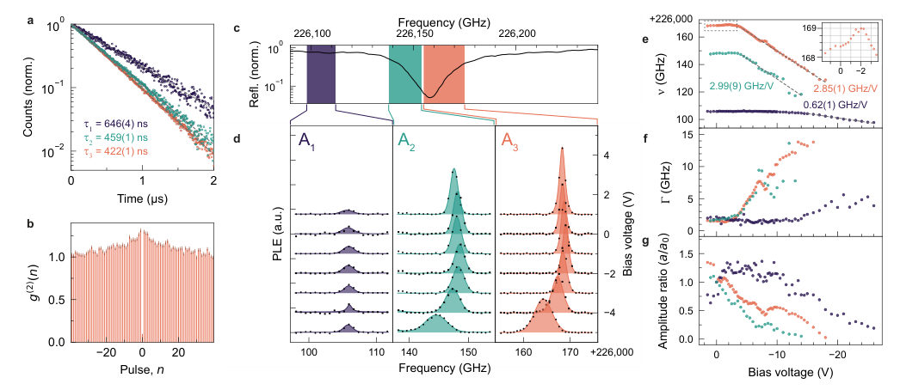
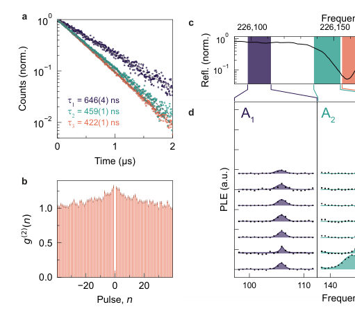
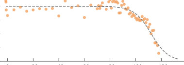
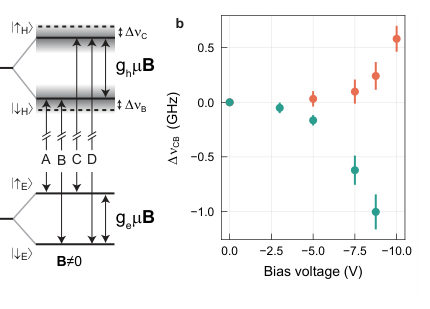

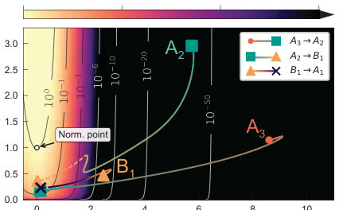
Main problem. Nanophotonic integration of silicon T centres causes spectral broadening and inhomogeneous distribution, preventing the mutual resonance required for entanglement protocols.
Main result. The researchers demonstrated DC Stark tuning of up to 30 GHz in silicon T centres using p-i-n diodes, enabling 55% of emitters to be brought into mutual resonance and significantly increasing the joint excitation probability.
Method. The study uses pulsed photoluminescence-excitation (PLE) spectroscopy, time-resolved single-photon detection, and second-order correlation measurements on silicon-on-insulator (SOI) nanophotonic cavities under cryogenic temperatures and applied reverse bias.
Summary. This paper demonstrates the use of the DC Stark effect to achieve local spectral tuning of single silicon T centres in nanophotonic cavities. By integrating these centres into p-i-n diodes, the researchers achieved a tuning range of 30 GHz, allowing a majority of emitters to be brought into resonance. The study also explores the physical mechanisms behind linewidth broadening and luminescence quenching under high bias. This advancement provides a pathway to increase the yield of performant spin-photon interfaces for large-scale quantum information technologies.
Model / system. The system consists of single silicon T centres (solid-state defects) integrated into 1-D silicon nanophotonic cavities with p-i-n diode structures on SOI substrates, operated at cryogenic temperatures (1.6-2.5 K).
Key observables. Zero-phonon line (ZPL) frequency, linewidth (homogeneous and inhomogeneous), photon statistics (g2(0)), excited-state lifetime, and luminescence intensity modulation.
Important parameters / regimes. Tuning range of 30 GHz, cavity quality factor Q = 5500, temperature T = 2.5 K, and reverse bias voltages up to -120 V.
Assumptions / limitations. Assumed that the observed spectral shifts are due to the Stark effect rather than Joule heating; TCAD simulations were performed at 300 K to avoid carrier freeze-out.
Figures summary. Fig 1: Device architecture and T centre structure; Fig 2: Lifetime, photon statistics, and PLE spectra under bias; Fig 4: Intensity modulation and sigmoidal quenching; Fig 5: Energy level structure and splitting modulation; Fig 6: Modeling of joint excitation probability.
Paper structure. Introduction to T centres and the challenge of integration; Device fabrication and architecture; Demonstration of Stark tuning and spectral control; Investigation of linewidth broadening and quenching mechanisms; Analysis of spin-orbit coupling and charge state dynamics; Conclusion on scalability.
Why it may be interesting. This work is highly relevant to quantum optics and quantum networks as it demonstrates a scalable method for controlling the spectral overlap of solid-state emitters, which is a fundamental requirement for photon-mediated entanglement and quantum repeaters.
Among the many solid-state emitters being explored for scalable quantum technologies, the silicon T centre is a leading candidate offering long-lived spin qubits, a telecommunications-band spin-photon interface, and integration with on-chip photonic circuits. However, nanophotonic integration broadens both the inhomogeneous spectral distribution and individual emitter linewidths. Here, we integrate single T centres into silicon nanophotonic cavities with p-i-n diodes for local electronic control. These devices enable Stark tuning up to 30 GHz, sufficient to bring 55(2)% of on-chip T centres into mutual resonance, and demonstrate tunable lifetime reduction across the cavity resonance. A model of the joint excitation probability shows an orders-of-magnitude increase in entanglement rate by tuning distinct emitters into mutual resonance. Luminescence modulation at high reverse biases reveals a transition to a dark charge state. Finally, bias-induced modulation of the optical transition splitting uncovers a potential mechanism for electrically driven excited-state spin mixing via spin-orbit coupling. Localized and individual spectral tuning increases the yield of performant silicon spin-photon interfaces and the number of devices per chip available for large-scale entanglement and quantum information technologies.
Authors: Anshuman Tripathi, Mircea Trif, Thore Posske
Type: theory · Category: strongly correlated electrons · PDF: https://arxiv.org/pdf/2604.24851v1
Analysis basis: full PDF text, analyzed in chunks
Topic relevance: 🔥 non-equilibrium dynamics 4/5 · analog quantum simulation 2/5 · exotic spin models in light-matter 2/5
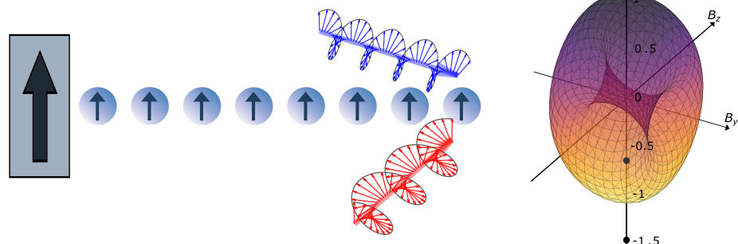
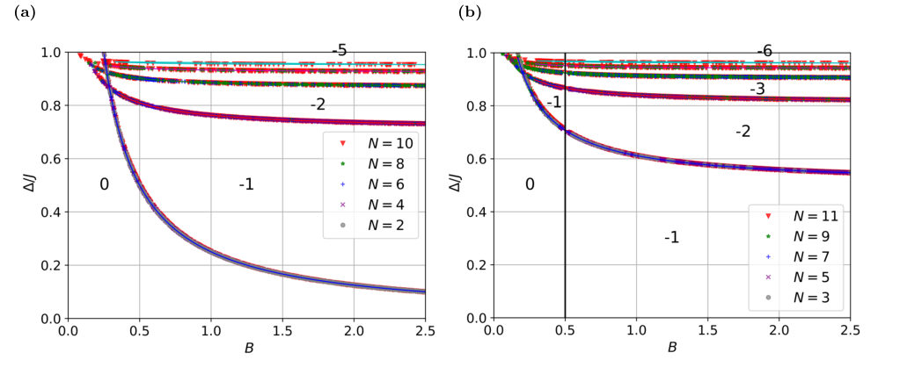
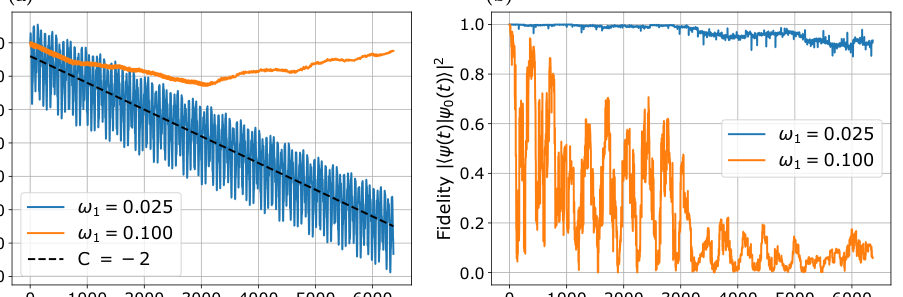
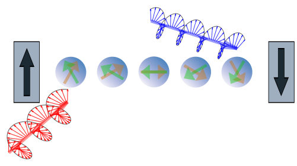
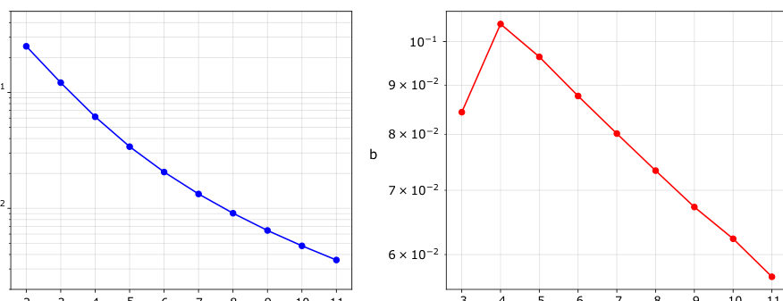
Main problem. Existing topological frequency converters are limited to small integer Chern numbers, which restricts the possible amplification and conversion factors of power transfer between driving fields.
Main result. The authors demonstrate that in an interacting XXZ Heisenberg spin chain, the Chern number scales linearly with the chain length N, enabling a topological frequency converter with an arbitrarily large, quantized conversion ratio.
Method. The study uses the Lanczos algorithm for ground state calculation, the Crank-Nicolson method for time evolution, and a gauge-invariant projection method to calculate the Chern number via Berry flux summation.
Summary. This paper presents a theoretical mechanism for achieving arbitrarily large, quantized power transfer between two driving frequencies. By using an interacting XXZ Heisenberg spin chain, the authors show that the Chern number—which dictates the conversion ratio—increases linearly with the system size. This allows for a topological frequency converter with a tunable and potentially massive amplification factor. The study also identifies universal scaling laws for the quantum critical points that govern this process.
Model / system. An interacting XXZ Heisenberg spin-1/2 chain of length N, where the first spin is coupled to a static magnetic field and the last spin is driven by two incommensurate, circularly polarized magnetic drives.
Key observables. Time-averaged pumped power (P), Chern number (C), ground-state fidelity, and energy transfer.
Important parameters / regimes. Exchange anisotropy (delta/J), magnetic field strength (B), chain length (N), and driving frequencies (omega1, omega2).
Assumptions / limitations. The system operates in the adiabatic or quasi-adiabatic regime, and the driving frequencies are sufficiently small to maintain the system near the instantaneous ground state.
Figures summary. Figure 3 compares energy transfer and fidelity in adiabatic vs. diabatic regimes; Figure 4 shows a general frequency converter setup; Figure 5 illustrates the scaling of hyperbolic fit parameters (b and c) with chain length N.
Paper structure. The paper introduces the problem of limited conversion factors, describes the XXZ spin chain model and driving mechanism, presents numerical results for Chern number scaling and degeneracy trajectories, analyzes the scaling of critical points using hyperbolic fits, and concludes with discussion on experimental platforms and limitations.
Why it may be interesting. This work is highly relevant for many-body dynamics and quantum optics as it provides a scalable mechanism for high-gain, quantized energy/frequency conversion using topological protection in interacting systems.
Topological frequency converters exploit a quantized transfer of power between two driving fields in a quantum system, a phenomenon topologically protected by the Chern number of the associated fiber bundle. While realizations with few-spin systems have theoretically demonstrated this effect, the conversion factors have typically been restricted to small integer values. Here, we investigate an interacting $XXZ$ Heisenberg spin-$1/2$ chain driven adiabatically by two magnetic drives with incommensurate frequencies. The Chern number, determined by the degeneracy points enclosed by the adiabatic trajectory, increases systematically with the chain length and can be tuned through the exchange anisotropy, providing direct control of the topological pumping strength. We reveal a universal dependency of the anisotropy and magnetic field strength for odd and even chain lengths of the quantum critical points. This provides a mechanism for a topological frequency converter with an arbitrarily large, quantized conversion ratio in interacting quantum spin chains. The mechanism remains the same for arbitrary coupling regions of the drives.
Authors: Nitin Kaloya, Kuldeep Suthar
Type: theory · Category: quantum gases · PDF: https://arxiv.org/pdf/2604.25694v1
Analysis basis: full PDF text, analyzed in chunks
Topic relevance: 🔥 analog quantum simulation 4/5 · exotic spin models in light-matter 3/5
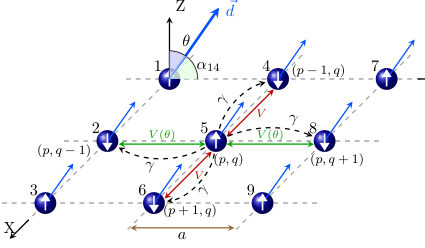
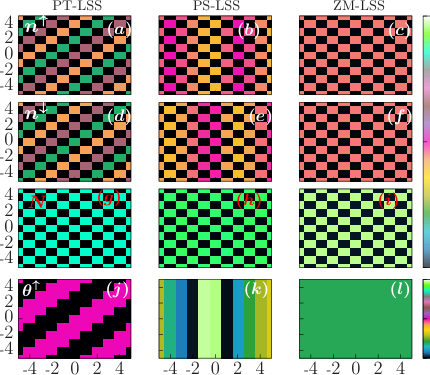
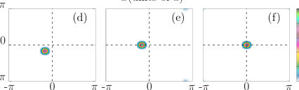
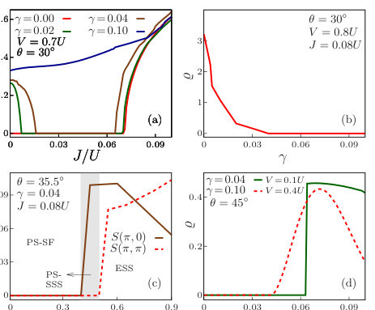
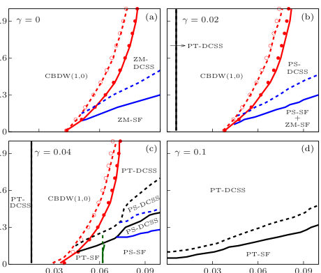
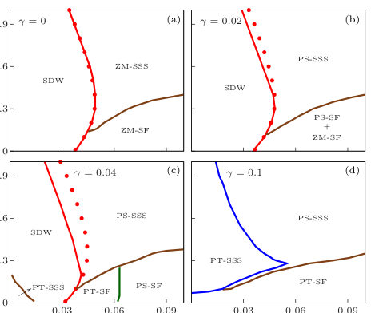
Main problem. Investigating the interplay between synthetic spin-orbit coupling and anisotropic dipolar interactions in 2D square optical lattices to understand the emergence of exotic magnetic quantum phases.
Main result. The study identifies novel finite-momentum crystal phases, including phase-twisted and phase-striped supersolids and superfluids, and reveals a quantum phase transition at a magic tilt angle where off-site interactions vanish.
Method. The authors employ a site-decoupled Gutzwiller ansatz and mean-field decoupling theory, supplemented by second-order perturbative analysis to determine phase boundaries.
Summary. This paper explores how the combination of spin-orbit coupling and tunable anisotropic dipolar interactions creates complex quantum phases in 2D square lattices. By varying the tilt angle of the dipoles, the researchers found that the system can transition between checkerboard and stripe-ordered states, particularly at a specific 'magic angle'. The study also highlights the emergence of phase-twisted and phase-striped supersolids. These findings offer a roadmap for experimentalists using ultracold atoms to observe exotic density-correlated and magnetic phases.
Model / system. A two-component (pseudospinor) bosonic system in a 2D square optical lattice described by an extended Bose-Hubbard Model, including Rashba-type spin-orbit coupling and anisotropic nearest-neighbor dipolar interactions.
Key observables. Superfluid order parameter, on-site densities, density imbalance, static structure factor S(k), momentum distribution, and magnetization.
Important parameters / regimes. Spin-orbit coupling strength (gamma), dipole tilt angle (theta), hopping amplitude (J/U), dipolar interaction strength (V/U), and the magic angle (theta_M approx 35.3 degrees).
Assumptions / limitations. The long-range dipolar interaction is truncated to nearest-neighbor interactions, and the single-particle hopping and SOC terms are treated as small perturbations.
Figures summary. Figure 1 shows a schematic of spin-flip complex hopping and dipole orientation; other figures present ground-state phase diagrams for various SOC strengths and tilt angles, and illustrate phase boundaries for transitions between insulating and compressible phases.
Paper structure. The paper introduces the physical system and model, details the theoretical methodology (Gutzwiller and mean-field), presents phase diagrams and results regarding the effects of tilt angle and SOC strength, and concludes with the implications for experimental observations.
Why it may be interesting. It provides a detailed parameter space for observing novel finite-momentum crystal phases and supersolidity in ultracold dipolar gases, which is highly relevant for many-body dynamics and synthetic gauge field research.
We examine the two-dimensional spin-orbit-coupled bosons in the presence of an anisotropic dipolar interaction in square lattices. The spin-orbit coupling leads to finite-momentum superfluid and supersolid states, while the nearest-neighbour interaction induces crystalline characteristics in the quantum phases of soft-core bosons. We employ site-decoupled Gutzwiller ansatz and mean-field decoupling theory to obtain the phase diagrams and investigate the effects of the tilt of magnetic dipoles with respect to the polarization axis. Our study reveals the intriguing quantum phase transition of checkerboard finite-momentum phase-twisted and phase-stripe states into their stripe counterparts at a magic tilt angle, at which the off-site interaction along one of the directions becomes zero. At smaller tilt angles, the checkerboard charge-density-wave phase intervened by two compressible finite-momentum phases, and at strong spin-orbit coupling strengths, the phase-twisted supersolid and superfluid phases emerge. At larger tilt angles, a transition between the striped order of phase-twisted states and phase-stripe states occurs. The inclusion of off-site inter-component correlation leads to density-correlated phases, lattice-induced supersolid, and ferromagnetic quantum phases. Our study highlights novel finite-momentum crystal phases of spin-orbit-coupled dipolar bosons and provides a parameter space to observe them in quantum gas experiments.
Authors: Emmanouil Giortamis, Felix Gust, Aleksandra Świerkowska, Sandra Stankovic, Innocenzo Fulginiti, Yanbin Chen, Xiaorang Guo, Benjamin Lienhard, Martin Schulz, Pramod Bhatotia
Type: both · Category: quantum information and computing · PDF: https://arxiv.org/pdf/2604.25863v1
Analysis basis: full PDF text, analyzed in chunks
Topic relevance: 🔥 QC/QI experiment 4/5 · quantum measurements 3/5
Main problem. Mid-circuit measurements (MCMs) and classical feedback latency/errors create significant bottlenecks in dynamic quantum circuits, leading to increased decoherence and branching errors in QEC and DQC.
Main result. The MCMit co-design reduces feedback latency by up to 70%, improves circuit depth by up to 7x, and achieves up to 80% lower logical error rates in surface codes through improved state discrimination and hardware-software mitigation.
Method. A hardware-software co-design featuring an FPGA-based controller with a multi-control branch instruction and neural network discriminators (Transformer and CNN) paired with software-level MCM elimination and stochastic branching.
Summary. This paper presents MCMit, a holistic hardware-software co-design to mitigate errors and latency in mid-circuit measurements. By combining an FPGA-based controller with new neural network-based state discriminators and software-level error mitigation, the authors significantly reduce the overhead of dynamic quantum circuits. The approach improves readout accuracy for short durations and reduces logical error rates in quantum error correction. This is crucial for the advancement of distributed quantum computing and scalable fault-tolerant architectures.
Model / system. The implementation uses the Qubic 2.0 open-source framework on an Xilinx Alveo FPGA, evaluated using experimentally extracted readout traces from a five-qubit superconducting QPU and simulated surface code patches.
Key observables. MCM error rates (bit-flips), readout fidelity, classical feedback latency, circuit depth, and logical error rates in surface codes.
Important parameters / regimes. Readout durations (250ns to 2000ns), signal-to-noise ratio (SNR), and surface code distances (d=7, 9, 11).
Assumptions / limitations. The evaluation assumes realistic noise models derived from IBM Heron processors and the effectiveness of the hardware-software co-design scales with the reduction of measurement-induced errors.
Figures summary. Figure 1 shows the readout pipeline and neural network architectures; Figure 2 analyzes the impact of MCM error and latency on performance; Figure 6 illustrates the modified controller architecture; Figure 7 details the Transformer and CNN designs; Figure 8 demonstrates dynamic circuit simplification.
Paper structure. The paper introduces the bottleneck of MCMs, proposes the MCMit co-design (hardware and software layers), details the implementation on FPGA, evaluates performance using experimental traces and QEC simulations, and concludes with a discussion on scalability and future directions.
Distributed Quantum Computing (DQC) and Quantum Error Correction (QEC) rely on dynamic circuits that include Mid-Circuit Measurements (MCMs) and classical feedback. These operations present a major bottleneck: MCMs suffer from high error rates that lead to real-time branching errors, while MCM and classical feedback latencies amplify decoherence errors. Current hardware controllers, qubit-state discriminators, and software error mitigation techniques fail to address these challenges holistically. We propose MCMit, a hardware-software co-design to mitigate branching and latency-induced errors. MCMit introduces a scalable, constant-latency multi-control branch instruction for faster classical feedback and two qubit-state discriminators, a transformer, and a CNN, with high accuracy even under short measurement durations. On the software side, static MCM elimination and stochastic branching complement the hardware by mitigating residual branching errors that persist despite hardware improvements. We implement MCMit on Qubic and evaluate it using experimentally extracted QPU readout traces. Our branch instruction reduces feedback latency by up to 70\%, improving circuit depths by up to $7\times$ over Qubic. Our CNN discriminator achieves 37-73\% higher accuracy for short measurement durations than the baselines, leading to up to 80\% lower logical error rates in QEC. Last, our software mitigation improves fidelity by 18--30\% over baseline methods.
Authors: Fabian Meylahn, Henning Vahlbruch, Benno Willke
Type: experiment · Category: quantum information and computing · PDF: https://arxiv.org/pdf/2604.25883v1
Analysis basis: full PDF text, analyzed in chunks
Topic relevance: 🔥 quantum optics experiment 4/5 · QC/QI experiment 3/5
Main problem. The dispersion of optical resonators often prevents the simultaneous resonance (co-resonance) of multiple interacting wavelengths, which is essential for efficient nonlinear processes like squeezing and parametric amplification.
Main result. The authors demonstrate a novel thermal control method using a monolithic bimetallic heat sink that creates a controlled temperature gradient to achieve precise dispersion control and co-resonance.
Method. A bimetallic heat sink (copper and stainless steel) is used to generate a longitudinal temperature gradient across a PPKTP crystal, validated by FEM simulations and experimental thermal imaging.
Summary. This paper presents a new way to control the dispersion in nonlinear optical cavities using a bimetallic heat sink. By creating a shallow temperature gradient across a nonlinear crystal, the researchers can achieve simultaneous resonance for two different wavelengths. This method reduces mechanical and thermal stress compared to traditional heating methods. The technique is highly relevant for improving the efficiency of devices used in quantum optics and precision measurements.
Model / system. A traveling-wave bow-tie resonator containing a 11.5 mm PPKTP crystal, operating at 1064 nm and 532 nm wavelengths.
Key observables. Parametric gain, temperature gradient (°C/mm), resonance positions, and predicted squeezing/anti-squeezing levels.
Important parameters / regimes. Temperature stability (300 ppm), pump parameter (x = 0.77), and quantum efficiency (97.5%).
Assumptions / limitations. Predictions for squeezing assume high quantum efficiency and negligible phase noise during detection.
Figures summary. Fig 2 compares bimetallic vs. segmented heating stress; Fig 3 shows experimental thermal profiles; Fig 4 and 5 map the double-resonance conditions and frequency deviations.
Paper structure. Introduction of the dispersion problem, description of the bimetallic heat sink design, FEM simulation results, experimental validation of thermal gradients, demonstration of dual-wavelength co-resonance, and discussion of applications.
Why it may be interesting. This work provides a practical engineering solution for stabilizing the nonlinear optical platforms required for generating squeezed light and high-gain parametric amplification, which are foundational for continuous-variable quantum information and gravitational wave detection.
Optical resonator-enhanced nonlinear interactions are of great importance for the efficient generation of continuous-wave second harmonic generation, optical parametric oscillation, frequency mixing, and the generation of squeezed light. In order to maximize these interactions within the intra-cavity nonlinear material, high intensities, optimal phase matching, and simultaneous resonance of all interacting fields are required. However, the dispersion of the optical resonator often prevents the co-resonance of multiple wavelengths. Here, we present a novel implementation using a monolithic bimetallic heat sink for controlling the resonator dispersion based on a shallow temperature gradient directly applied to a section of the nonlinear crystal. This method enables precise dispersion control and is designed to minimize mechanical and thermal stresses in the nonlinear crystal, thus providing an additional method for designing highly efficient and reliable resonator-enhanced nonlinear devices for demanding applications such as gravitational wave detection, quantum optics, and frequency conversion.
Authors: Imran Mahboob, Satoshi Sasaki, Takaaki Takenaka
Type: experiment · Category: quantum information and computing · PDF: https://arxiv.org/pdf/2604.25195v1
Analysis basis: full PDF text, analyzed in chunks
Topic relevance: 🔥 QC/QI experiment 4/5 · quantum optics experiment 2/5
Main problem. The difficulty and high resistance variation associated with fabricating reliable Al/AlOx/Al Josephson junctions using complex electron-beam lithography techniques like the Dolan bridge.
Main result. A simplified photolithography-based fabrication method was demonstrated that achieves significantly lower resistance variation (25% vs 200%) and high stability for SQUIDs and parametric amplifiers.
Method. A minimal approach using maskless photolithography, argon etching to remove contaminants, and controlled in-situ oxidation followed by electron-beam evaporation.
Summary. This paper presents a simplified, scalable method for fabricating Al/AlOx/Al Josephson junctions using standard photolithography instead of complex e-beam lithography. The technique significantly reduces resistance variation and improves device uniformity across multiple chips. The researchers demonstrated the method's effectiveness by creating stable SQUIDs and a Josephson parametric amplifier with 40 dB of gain. This approach could be pivotal for the widespread production of superconducting quantum technologies.
Model / system. The experimental platform consists of Al/AlOx/Al Josephson junctions and SQUIDs integrated into 2D resonators and 3D cavities for quantum-limited parametric amplification.
Key observables. Junction resistance (Rjj), flux response symmetry/periodicity, parametric amplification gain, and transmission electron microscopy (TEM) structural analysis.
Important parameters / regimes. Junction areas of 1 to 6 um^2, oxidation pressures from 0.5 to 7 Torr, and amplification gains of approximately 40 dB.
Assumptions / limitations. The method assumes that the argon milling step effectively removes contaminants to ensure pristine interfaces for the oxide barrier.
Figures summary. Fig 1 shows the fabrication schematic; Fig 2 displays optical micrographs and resistance vs. area plots; Fig 3 presents STEM images of the junction structure; Fig 4 shows SQUID resonator response and parametric amplification gain.
Paper structure. The paper introduces a new fabrication protocol, details the experimental steps and structural characterization via TEM, demonstrates device performance through resistance tuning and stability tests, and concludes with a demonstration of quantum-limited parametric amplification.
Why it may be interesting. The development of more scalable and reproducible hardware for superconducting circuits is crucial for the realization of large-scale quantum processors and high-fidelity quantum-limited amplifiers.
A minimal method to fabricate Al/AlO$_x$/Al Josephson junctions (JJs) using photolithography and argon etching, before metallization and oxidation, is demonstrated. JJs with areas ranging from 1 to 6 $μ$m$^2$ can be fabricated and, with the appropriate oxidation conditions, the junction resistance can be varied by $\sim$2 orders of magnitude. Transmission electron microscopy reveals the successful fabrication of JJs with few grain boundaries suggesting reduced energy loss from two-level-systems. Superconducting QUantum Interference Devices (SQUIDs) fabricated from this methodology exhibit reduced resistance variation of over multiple chips, compared with electron beam lithography, and the devices can sustain repeated thermal cycles to 10 mK with the excellent flux response remaining unchanged. The quantum applications of this technology are demonstrated by embedding a SQUID resonator into a 3D cavity and parametrically amplifying low photon numbers with gains of $\sim$40 dB. This work establishes the simplest approach to fabricating JJs to date, and it could prove pivotal to the widespread utilization of superconducting circuit-based quantum technologies.
Authors: Jack Clarke, Preslav Asenov, Jesse Smeets, Jia-Shian Wang, David B. Cassidy, Alessio Serafini
Type: both · Category: quantum information and computing · PDF: https://arxiv.org/pdf/2604.25034v1
Analysis basis: full PDF text, analyzed in chunks
Topic relevance: 🔥 quantum measurements 4/5 · entanglement & information structure 2/5
Main problem. The inability to conclusively demonstrate polarization entanglement in MeV-scale photons from electron-positron annihilation due to the lack of ideal projective-polarization measurements.
Main result. The authors show that using sequential Compton scattering events (N >= 2) allows the measurement to converge toward an ideal projective measurement, enabling the violation of CHSH inequalities.
Method. A POVM-based framework using the Stokes-Mueller formalism to model sequential Compton scattering, supplemented by Geant4 Monte Carlo simulations for experimental feasibility.
Summary. This paper addresses the difficulty of verifying entanglement in high-energy gamma-ray photons. By applying the POVM formalism to Compton polarimetry, the authors demonstrate that while a single scattering event is too weak to violate Bell inequalities, increasing the number of sequential scattering events improves measurement sharpness. This approach allows for a robust, model-independent certification of entanglement that can rule out local hidden variable models in electron-positron annihilation processes.
Model / system. The system consists of entangled photon pairs produced from electron-positron annihilation at the MeV scale, analyzed via Compton polarimetry involving multiple sequential scattering events.
Key observables. CHSH function (S), Compton analyzing power (beta), polarization correlations, and coincidence count rates.
Important parameters / regimes. Number of scattering events (N), photon energy (511 keV), azimuthal angles (phi), and polar scattering angles (theta).
Assumptions / limitations. Assumes each scattering event is independent with no quantum coherence between involved electrons; assumes a simplified dichotomic, normalized POVM.
Figures summary. Fig 1 shows the Bloch sphere, a schematic of the POVM-based polarimetry, and the Bell test setup; Fig 2 plots the optimized CHSH function violation as a function of the number of scattering events N.
Paper structure. The paper introduces the problem of high-energy entanglement certification, develops a POVM mathematical framework for sequential scattering, analyzes the convergence of measurement sharpness (beta) toward ideal projection, and concludes with experimental feasibility simulations.
Why it may be interesting. It provides a novel application of POVM formalism and quantum state discrimination theory to high-energy physics, demonstrating how non-projective measurements can be transformed into Bell-violating measurements through sequential interactions.
Quantum entanglement between gamma-ray photons emitted following electron-positron annihilation is expected to be maximal and may be characterized via non-classical polarization correlations. However, this is difficult to verify experimentally because there are no established schemes that approach ideal projective-polarization measurements for high-energy photons. Hence, polarization entanglement between MeV-scale annihilation photons has not yet been conclusively demonstrated. We develop here a framework that models polarization measurements of high-energy photons via Compton polarimetry, employing the formalism of positive operator-valued measures (POVMs). We extend the POVM description to sequences of repeated interactions and show that the measurement converges toward an ideal projective measurement of linear polarization as the number of interactions increases. We demonstrate that this progressive improvement in measurement sharpness can enable the experimental violation of CHSH inequalities.
Authors: Yi-Xuan Yao, Hao-Yue Zhang, Cheng-Ge Liu, Rong-Hang Chen, Qing Ai, Franco Nori
Type: theory · Category: numerical methods · PDF: https://arxiv.org/pdf/2604.25753v1
Analysis basis: full PDF text, analyzed in chunks
Topic relevance: 🔥 methods for driven-dissipative 4/5 · non-equilibrium dynamics 2/5
Main problem. The need for numerically-exact and computationally-efficient theoretical simulations of Two-Dimensional Spectroscopy (2DS) to interpret complex dynamics in open quantum systems, especially when conventional perturbative methods fail.
Main result. The authors propose a quantum-simulation approach based on the bath-engineering technique (BET) that accurately reproduces 2DS patterns and demonstrates that the bath's time correlation function (TCF) can be extracted from the absorptive spectrum.
Method. A quantum-simulation approach using the Bath-Engineering Technique (BET), which replaces complex system-bath interactions with a noise Hamiltonian containing time-dependent stochastic variables.
Summary. This paper introduces a new numerical framework for simulating Two-Dimensional Spectroscopy in open quantum systems using the bath-engineering technique. By replacing complex environments with a stochastic noise Hamiltonian, the method achieves numerical exactness more efficiently than traditional hierarchical methods. The authors demonstrate that this approach can accurately model chiral enantiodetection and complex molecular dynamics in chloroform. Furthermore, they show that while individual 2D signals are insufficient for extracting bath correlations, the combined absorptive spectrum allows for the successful reconstruction of the bath's time correlation function.
Model / system. The study utilizes a Brownian Oscillator Model for the bath and applies the method to a four-level system for chiral enantiodetection and a six-level system representing RDC dissolved in chloroform.
Key observables. 2D spectra (rephasing and non-rephasing signals), absorptive 2DS, time correlation functions (TCFs), and center-line slope (CLS).
Important parameters / regimes. Spectral density, Rabi frequencies, transition dipole moments, coherence time, population time, and signal time.
Assumptions / limitations. Square-pulse approximation, Rotating-Wave Approximation (RWA), short-time approximation for the line-shape function, and the high-temperature limit where the TCF is real.
Figures summary. Figure 1 shows the chiral molecule structure and 2DS process; Figures 7-10 illustrate 2DS peak dynamics and CLS behavior; Figures 11-14 demonstrate the convergence of the BET method with respect to ensemble size and time step.
Paper structure. The paper introduces the BET-based simulation approach, demonstrates its application to a four-level chiral system, validates the extraction of TCFs via CLS theory, applies the method to a complex molecular system (RDC), and concludes with convergence and scalability analyses.
Why it may be interesting. It provides a powerful, numerically-exact alternative to HEOM for simulating non-Markovian dynamics in large, complex systems, which is highly relevant for researchers in open quantum systems and quantum optics.
Two-dimensional spectroscopy (2DS) is a powerful ultrafast technique for probing electronic and vibrational dynamics in complex microscopic systems. Extracting detailed information on system dynamics and system-bath interactions from 2DS experiments requires precise theoretical simulations for comparison, which motivates the development of numerically-exact and computationally-efficient simulation approaches. Here, we propose a quantum-simulation approach for 2DS based on the bath-engineering technique (BET), which has been successfully employed in quantum simulations of open quantum dynamics. To demonstrate our approach, we first simulate the 2DS of a driven four-level system in chiral enantiodetection, where we also assess the applicability of the center-line slope (CLS) method for extracting time correlation functions (TCFs) from the 2DS. We further apply our approach to the 2DS of ${\rm Rh(CO)_2C_5H_7O_2}$ (RDC) dissolved in chloroform, where the results reproduce the main spectral patterns observed in experiments. Our work provides a numerically-exact and efficient framework for simulating 2DS, and can offer additional insight into the dynamics of open quantum systems.
Authors: Muhammad Idrees Khan, Sauro Succi, Hua-Dong Yao
Type: theory · Category: quantum information and computing · PDF: https://arxiv.org/pdf/2604.25429v1
Analysis basis: full PDF text, analyzed in chunks
Topic relevance: 🔥 methods for driven-dissipative 4/5
Main problem. Quantum Lattice Boltzmann Methods (QLBM) suffer from an exponential decay in success probability because implementing the dissipative collision step via standard block-encoding or LCU requires post-selection.
Main result. The authors present a deterministic, block-encoding-free construction using a CPTP channel that achieves a success probability of 1 for the dissipative MRT block.
Method. The method uses a signed two-rail population encoding and an amplitude-damping quantum channel to realize the relaxation, effectively replacing post-selection with classical bookkeeping.
Summary. This paper solves a major scalability bottleneck in quantum fluid dynamics simulations. By replacing probabilistic block-encoding with a deterministic CPTP channel using a two-rail encoding, the authors eliminate the multiplicative decay of success probability during the dissipative collision step. This allows for much larger and longer-running quantum Lattice Boltzmann simulations. The method is proven to be accurate to machine precision and is compatible with various quantum computing architectures.
Model / system. The paper focuses on the Multiple-Relaxation-imTime (MRT) Lattice Boltzmann Method (LBM) for fluid dynamics, specifically implementing the dissipative collision step in moment space.
Key observables. Non-equilibrium moments (delta m_r), rail number operators, and the pointwise residual error of the dissipative update.
Important parameters / regimes. Relaxation parameters (lambda_r), overrelaxation regime (lambda_r < 0), and the encoding scale (S_r).
Assumptions / limitations. The construction assumes a modewise diagonal collision operator and does not cover block-coupled collision matrices or the full Carleman-linearized collision step.
Figures summary. Figure 1 shows the high-level pipeline from classical moments to decoded updates; Figure 2 displays the gate-level circuit; Figure 3 illustrates the hybrid Carleman-CPTP collision pipeline; Figure 4 shows the error evolution in a 3D Taylor-Green vortex simulation.
Paper structure. The paper introduces the QLBM bottleneck, proposes a two-rail CPTP construction, provides formal proofs for the deterministic update (Theorem 3.3) and success probability (Corollary 3.4), details the gate-level implementation, and validates the method through 3D lattice and synthetic numerical audits.
Why it may be interesting. This is highly relevant for researchers in open quantum systems as it provides a way to implement non-unitary, dissipative dynamics deterministically using CPTP maps and amplitude damping, avoiding the probabilistic overhead of standard gate-based methods.
Lattice Boltzmann (LB) on quantum devices must reconcile unitary gate evolution with the dissipative \emph{collision} step. In the multiple-relaxation-time (MRT) class, we work in the common setting of \emph{modewise diagonal} moment relaxation, $δm_r'=λ_r\,δm_r$ with $λ_r\in[-1,1]$ (overrelaxation if $λ_r<0$). Embedding that contraction in a unitary by block encoding or a linear combination of unitaries (LCU) typically yields subunitary success probability that decays multiplicatively across modes, sites, and time, a key bottleneck for quantum LB. \emph{For the dissipative MRT block alone} we give a \emph{block-encoding-free} construction: a signed \emph{two-rail} population encoding, then a completely positive trace-preserving (CPTP) map (per-rail amplitude damping with survival $|λ_r|$ and, if $λ_r<0$, a rail SWAP) so that, after the decode, the map agrees with classical MRT relaxation exactly (expectations of the rail number operators, common encoding--decode scale). Trace preservation gives success probability $1$ for that substage. The main result is the dissipative MRT block; construction of the equilibrium moment vector~$m^{\mathrm{eq}}=Mf^{\mathrm{eq}}$ (prescribed~$f^{\mathrm{eq}}$, host moment matrix~$M$; notation as in Section~\ref{subsec:generic-mrt}), moment transforms, streaming, and boundaries are composed with it as in a standard host pipeline and lie outside the scope of the formal theorem. Hybrid and fully coherent encodings, adaptive scales, Carleman-based context, and a one-rail no-go in the same nonnegative population framework are in the main text. Audits of the open-channel map on a long LBM collide-stream simulation and on stencil-free inputs both match the target to machine precision.
Authors: Prashanti Priya Angara, Luis F. Rivera, Ulrike Stege, Hausi Müller, Ibrahim Shehzad
Type: both · Category: quantum information and computing · PDF: https://arxiv.org/pdf/2604.25162v1
Analysis basis: full PDF text, analyzed in chunks
Topic relevance: 🔥 QC/QI experiment 4/5
Main problem. Demonstrating practical quantum advantage for combinatorial optimization by moving beyond standalone algorithms toward end-to-end, integrated hybrid workflows.
Main result. The proposed three-stage pipeline effectively uses classical pre-processing to reduce problem size and post-processing to ensure feasibility, allowing QAOA to produce competitive solutions on real IBM hardware.
Method. A hybrid 'sandbox' workflow involving classical reduction rules (pre-processing), the SCOOP framework to transform constrained problems into unconstrained 'twins', and QAOA execution on IBM quantum hardware.
Summary. This paper presents a complete experimental workflow for solving complex graph optimization problems like Minimum Vertex Cover and Maximum Clique. Instead of focusing solely on the quantum algorithm, the authors integrate classical pre-processing to shrink problem sizes and classical post-processing to ensure solution feasibility. By using the SCOOP framework to avoid difficult penalty terms in the quantum circuit, they demonstrate that QAOA can provide meaningful improvements on real IBM quantum hardware. This approach provides a practical roadmap for achieving quantum utility in combinatorial optimization.
Model / system. The study utilizes the IBM Quantum System One at PINQ2, specifically the 156-qubit IBM Heron r2 processor (ibm_quebec) with a heavy-hexagonal lattice topology.
Key observables. Approximation ratios, probability mass of optimal and near-optimal solutions, expected values, and profit gain over random sampling.
Important parameters / regimes. QAOA circuit depth (p up to 8), graph vertex counts (up to 128 on hardware, up to 4,941 in pipeline evaluation), and error suppression strategies (measurement twirling and dynamical decoupling).
Assumptions / limitations. The strategy assumes an 'instance-aware' approach where classical methods exhaust tractable substructures, leaving only hard parts for the quantum processor.
Figures summary. Figure 1 illustrates the end-to-end pipeline; Figure 2 shows the practitioner's decision landscape, approximation ratios for various graphs, and cumulative probability curves for solution quality.
Paper structure. The paper introduces the need for end-to-end workflows, describes the three-stage sandbox platform (pre-processing, quantum solver, post-processing), details the SCOOP framework for unconstrained transformation, presents experimental results on IBM hardware, and concludes with a discussion on the path to quantum utility.
Demonstrating quantum advantage for combinatorial optimization requires more than standalone algorithmic results; it calls for end-to-end case studies that integrate problem modelling, quantum execution, and classical refinement into practical workflows. This paper presents a sandbox platform for experimenting with hybrid quantum-classical workflows in graph optimization, enabling the systematic study of end-to-end optimization pipelines. Using our platform, we investigate three classically intractable and mutually reducible graph problems -- Minimum Vertex Cover, Maximum Independent Set, and Maximum Clique -- by transforming them into an unconstrained problem and solving the resulting instances with QAOA on IBM platforms. Our workflow combines classical pre-processing to reduce instance size, quantum optimization on the reduced problem, and classical postprocessing to map quantum outputs to high-quality feasible solutions, thereby avoiding direct constraint encoding in the quantum circuit. We evaluate the approach on synthetic graphs, benchmark instances, and real-world networks, and report hardware experiments on IBM Quantum System One at PINQ2 in Bromont, Quebec, powered by IBM's 156-qubit Heron r2 processor on graphs up to 128 vertices, with circuits involving up to 128 qubits and 13,555 two-qubit gates. The results illustrate how sandbox-style end-to-end experimentation can expose bottlenecks, clarify the role of classical-quantum workload partitioning, and provide domain experts and practitioners with a practical guide for interpreting quantum optimization outputs and assessing quantum utility on the road to quantum advantage in combinatorial optimization.
Authors: Ruizi Hu, Zongyuan Li, Zhancheng Yao, Yufei Wu, Qiang Zhang, Yining Jiao, Quan Guan, Lijing Jin, Wangwei Lan, Chengyao Li, Lu Ma, Liyong Mao, Huijuan Zhan, Ze Zhan, Ran Gao, Lijuan Hu, Kannan Lu, Xizheng Ma, Tenghui Wang, Peng Xiang, Chunqing Deng, Shasha Zhu
Type: experiment · Category: quantum information and computing · PDF: https://arxiv.org/pdf/2604.25303v1
Analysis basis: full PDF text, analyzed in chunks
Topic relevance: 🔥 QC/QI experiment 4/5

Main problem. The scalability of superconducting quantum processors is limited by the 'wiring bottleneck,' where the need for individual room-temperature control lines for each qubit leads to excessive heat load and calibration overhead.
Main result. The researchers demonstrated a millikelvin digital-to-analog converter (DAC) integrated with fluxonium qubits that allows for deterministic, quantized flux tuning via SFQ pulses without degrading qubit coherence.
Method. The team used a multi-chip module architecture to integrate an SFQ-based DAC with high-coherence fluxonium qubits, employing single-flux-quantum pulses to program persistent flux states in an rf-SQUID-based storage loop.
Summary. This paper presents a breakthrough in superconducting quantum hardware by introducing a millikelvin-compatible digital-to-analog converter. By using single-flux-quantum pulses to program local flux storage, the device enables precise, non-volatile tuning of fluxonium qubits. This approach significantly reduces the need for individual room-temperature wires, addressing a major bottleneck in scaling up quantum processors. Crucially, the DAC operates without introducing measurable decoherence to the qubits.
Model / system. The system consists of a multi-chip module (MCM) featuring a digital control chip and a qubit chip (fluxonium qubits on sapphire) connected via indium bumps, utilizing an rf-SQUID-based DAC and SFQ logic.
Key observables. Qubit frequency shifts, flux increment steps (approx. 4.8 mPhi0), qubit relaxation time (T1), and dephasing rates (Ramsey and Echo measurements).
Important parameters / regimes. Operating temperature below 20 mK, screening parameter beta_L = 243, storage inductance L = 1 nH, and critical current Ic approx 80-133 uA.
Assumptions / limitations. Assumes that required flux biases across different qubits lie within a narrow range suitable for a shared global coarse bias, and that the reset protocol reliably converges to a deterministic state.
Figures summary. Figure 1 shows the conceptual architecture and circuit implementation; Figure 3 illustrates the linear evolution of DAC output and the programming margin; Figure 4 compares qubit spectroscopy and dephasing rates between conventional and DAC-controlled bias.
Paper structure. The paper introduces the scalability problem, describes the DAC architecture and SFQ-based programming mechanism, presents experimental characterization of flux increments and qubit coherence, and discusses the implications for large-scale integrated control stacks.
Scaling superconducting quantum processors is increasingly constrained by the wiring, heat load, and calibration overhead associated with delivering high-resolution analog signals from room temperature to qubits at millikelvin temperature. Here we demonstrate a superconducting digital-to-analog converter (DAC) integrated with high-coherence fluxonium qubits in a multi-chip module architecture. The DACs generate persistent analog flux signals for tuning qubit parameters and are programmed deterministically using single-flux-quantum (SFQ) pulses, providing a digital interface compatible with established SFQ routing and demultiplexing technologies. Operating at millikelvin temperature, the DACs enable in-situ tuning of fluxonium qubits without measurable degradation of qubit coherence. The presented device provides a static control primitive for flux-tunable qubits, enabling parameter homogenization and eliminating the need for individual room-temperature DC bias lines. These results establish SFQ-programmable millikelvin DACs as a building block for digitally controlled superconducting quantum processors.
Authors: Anina Köhler, Jakob Murauer, Tim Heine, Stefan Rosemann, Tobias Hemmert
Type: both · Category: quantum information and computing · PDF: https://arxiv.org/pdf/2604.25509v1
Analysis basis: full PDF text, analyzed in chunks
Topic relevance: 🔥 QC/QI experiment 4/5
Main problem. Evaluating the practical feasibility of implementing Simon's algorithm for quantum cryptanalysis of the Even-Mansour cipher on NISQ-era hardware and investigating the scalability of quantum circuit synthesis tools.
Main result. Successful secret key recovery for N=3 and N=4 bit-length Even-Mansour constructions was demonstrated on the IBM miami processor, though a classical memory bottleneck was identified for N=5.
Method. The researchers implemented Simon's period-finding algorithm using the DORCIS toolchain for circuit synthesis, applied error mitigation techniques like Dynamical Decoupling and Pauli Twirling, and used Gaussian elimination for post-processing.
Summary. This paper presents a proof-of-concept implementation of Simon's algorithm to attack the Even-Mansour symmetric cipher on real NISQ hardware. By using the IBM miami processor, the authors successfully recovered secret keys for very small bit-lengths (N=3 and N=4). The study highlights both the potential for quantum cryptanalysis on current hardware and the significant classical computational bottlenecks in synthesizing larger quantum circuits.
Model / system. The experimental platform is the IBM miami NISQ quantum processor, utilizing a quantum encryption oracle representing the Even-Mansour cipher acting on quantum states.
Key observables. Recovery of the secret key vector k1 via the identification of the hidden period, and the frequency distribution of measurement outcomes.
Important parameters / regimes. Key lengths N=3, 4, and 5; circuit depth and T-depth; depolarization parameter p; and the number of shots (10^5 per experiment).
Assumptions / limitations. The attack assumes a quantum oracle model (access to the encryption of quantum states), which is considered impractical in real-world settings.
Figures summary. Figures include schematics of the quantum circuit and the Even-Mansour process, representations of the encryption oracle, workflow diagrams for the attack, and distributions of measurement results comparing ideal vs. noisy outcomes.
Paper structure. The paper introduces the cryptanalytic problem, describes the hardware and circuit synthesis methodology, presents experimental results for small bit-lengths, analyzes noise and collision impacts, and discusses scalability limitations and future work.
Simon's algorithm is a polynomial period-finding algorithm that has been used to exploit the algebraic structure of specific symmetric ciphers, showing that exponential speedups in their cryptanalysis are theoretically possible. While the theoretical framework for an attack using Simon's algorithm on the Even-Mansour cipher is well-established, practical implementations on noisy intermediate-scale quantum (NISQ) hardware remain limited. This paper presents a proof of concept quantum cryptanalysis of the Even-Mansour cipher using Simon's period-finding algorithm on NISQ hardware. For N = 3 and N = 4, we successfully demonstrate secret key recovery for N-bit constructions on the ibm_miami processor. Our experiments also identify a scaling limitation in the classical pre-processing stage: The DORCIS circuit optimization tool encountered a memory bottleneck at N = 5, preventing the generation of optimized circuits for larger key lengths. Our results suggest firstly that Simon's algorithm is effective for the Even-Mansour cipher for short bit lengths on current quantum hardware. Secondly, while DORCIS is effective for the small-scale S-boxes for which it was designed, there remains a need for the investigation of more scalable and efficient synthesis tools capable of handling larger and more general permutations in the context of Even-Mansour ciphers.
Authors: Andreas Dechant, Kiyoshi Kanazawa
Type: theory · Category: statistical mechanics · PDF: https://arxiv.org/pdf/2604.25095v1
Analysis basis: full PDF text, analyzed in chunks
Topic relevance: entanglement & information structure 3/5 · non-equilibrium dynamics 3/5 · Keldysh / 2PI / non-Gaussian methods 2/5 · correlated / nonlocal dissipation 2/5 · methods for driven-dissipative 2/5
Main problem. Addressing thermodynamic inconsistencies in non-Markovian systems, specifically the apparent violation of the second law where entropy production can transiently decrease.
Main result. The authors show that a Markovian embedding provides a unique and physically consistent thermodynamic description where entropy production increases monotonically, resolving apparent violations through heat and information exchange with auxiliary degrees of freedom.
Method. The study uses an 'inverse coarse-graining' technique to embed non-Markovian Generalized Langevin Equations (GLE) into a high-dimensional Markovian representation using auxiliary degrees of freedom and matrix decomposition.
Summary. This paper develops a consistent thermodynamic framework for non-Markovian Langevin equations by embedding them into a higher-dimensional Markovian system. It demonstrates that while non-Markovian entropy production can appear to decrease, this is simply due to uncaptured heat and information exchange with auxiliary environmental degrees of freedom. The authors prove that the resulting Markovian thermodynamic quantities are unique and independent of the specific embedding choice. This approach provides a way to recover the monotonic increase of entropy required by the second law of thermodynamics.
Model / system. A target system with degrees of freedom x_s(t) evolving via a non-Markovian GLE with a memory kernel and thermal noise, embedded into an extended system with auxiliary degrees of freedom x_a and a quadratic interaction potential.
Key observables. Entropy production (Markovian and non-Markovian), heat flow (interaction and total), work, information flow, and mutual information.
Important parameters / regimes. Memory kernel decay rates, friction coefficients, temperature, and the number of auxiliary modes used for power-law approximation.
Assumptions / limitations. The memory kernel is linear and satisfies the fluctuation-dissipation relation; forces are conservative; the noise acting on the target and auxiliary systems is independent.
Figures summary. Figure 1 and 2 show the evolution of particle position in a time-dependent trap, comparing Markovian and non-Markovian heat flows and the rate of change of interaction energy.
Paper structure. The paper introduces the problem of non-Markovian thermodynamics, develops the Markovian embedding construction, proves the uniqueness of thermodynamic quantities, and applies the framework to specific models like power-law memory and time-dependent traps.
Why it may be interesting. This work is highly relevant for open quantum systems and many-body dynamics as it provides a rigorous thermodynamic framework for systems with memory, resolving how information exchange with an environment can mimic entropy-decreasing processes.
We develop the thermodynamics of non-Markovian generalized Langevin equations by embedding them in a high-dimensional Markovian representation involving auxiliary degrees of freedom. If the memory is linear and satisfies detailed balance with the noise, we provide an explicit construction of the embedding for non-Markovian dynamics with many degrees of freedom and hydrodynamic interactions. Moreover, while the embedding is generally not unique, we show that it results in unique values of thermodynamic quantities of the Markovian system. This allows us to define the Markovian entropy production of a non-Markovian system, which, in contrast to the definition based directly on the non-Markovian dynamics, is guaranteed to increase monotonically with time. Moreover, the Markovian representation allows us to identify the apparent decrease in the non-Markovian entropy with heat and information exchange between the system and the auxiliary degrees of freedom.
← Index · ← Previous · Next →